|
СТРОИТЕЛЬНЫЕ НОРМЫ И ПРАВИЛА |
|
ОСНОВАНИЯ ЗДАНИЙ И СООРУЖЕНИЙ СНиП 2.02.01-83* |
Москва
РАЗРАБОТАНЫ НИИОСП им. Н.М. Герсеванова Госстроя СССР (руководитель темы - д-р техн. наук, проф. Е.А. Сорочан, ответственный исполнитель - канд. техн. наук А.В. Вронский), институтом Фундаментпроект Минмонтажспецстроя СССР (исполнители - канд. техн. наук Ю.Г. Трофименков и инж. М.Л. Моргулис) с участием ПНИИИС Госстроя СССР, производственного объединения Стройизыскания Госстроя РСФСР, института Энергосетьпроект Минэнерго СССР и ЦНИИС Минтрансстроя.
ВНЕСЕНЫ НИИОСП им. Н.М. Герсеванова Госстроя СССР
ПОДГОТОВЛЕНЫ К УТВЕРЖДЕНИЮ Главным управлением технического нормирования и стандартизации Госстроя СССР (исполнитель - О.Н. Сильницкая).
СНиП 2.02.01-83* является переизданием СНиП 2.02.01-83 с изменениями № 1, 2, утвержденными постановлениями Госстроя СССР от 9 декабря 1985 г. № 211, от 1 июля 1987 г № 125
Номера пунктов и приложений, в которые внесены изменения, отмечены звездочкой.
При пользовании нормативным документом следует учитывать утвержденные изменения строительных норм и правил и государственных стандартов, публикуемые в журнале «Бюллетень строительной техники» и информационном указателе «Государственные стандарты»
|
Государственный комитет СССР по делам строительства (Госстрой СССР) |
Строительные нормы и правила |
СНиП 2.02.01-83* |
|
Основания зданий и сооружений |
Взамен СНиП II-15-74 и СН 475-75 |
|
Внесены НИИОСП им. Н.М. Герсеванова Госстроя СССР |
Утверждены постановлением Государственного комитета СССР по делам строительства от 5 декабря 1983 г. № 311 |
Срок введения в действие 1 января 1985 г. |
Настоящие нормы должны соблюдаться при проектировании оснований зданий и сооружений1.
_____________
1 Далее для краткости, где это возможно, вместо термина «здания и сооружения» используется термин «сооружения».
Настоящие нормы не распространяются на проектирование оснований гидротехнических сооружений, дорог, аэродромных покрытий, сооружений, возводимых на вечномерзлых грунтах, а также оснований свайных фундаментов, глубоких опор и фундаментов под машины с динамическими нагрузками.
Положения данных норм соответствуют СТ СЭВ 5507-86*.
1. ОБЩИЕ ПОЛОЖЕНИЯ
1.1. Основания сооружений должны проектироваться на основе:
а) результатов инженерно-геодезических, инженерно-геологических и инженерно-гидрометеорологических изысканий для строительства;
б) данных, характеризующих назначение, конструктивные и технологические особенности сооружения, нагрузки, действующие на фундаменты, и условия его эксплуатации;
в) технико-экономического сравнения возможных вариантов проектных решений (с оценкой по приведенным затратам) для принятия варианта, обеспечивающего наиболее полное использование прочностных и деформационных характеристик грунтов и физико-механических свойств материалов фундаментов или других подземных конструкций.
При проектировании оснований и фундаментов следует учитывать местные условия строительства, а также имеющийся опыт проектирования, строительства и эксплуатации сооружений в аналогичных инженерно-геологических и гидрогеологических условиях.
1.2. Инженерные изыскания для строительства должны проводиться в соответствии с требованиями СНиП, государственных стандартов и других нормативных документов по инженерным изысканиям и исследованиям грунтов для строительства.
В районах со сложными инженерно-геологическими условиями: при наличии грунтов с особыми свойствами (просадочные, набухающие и др.) или возможности развития опасных геологических процессов (карст, оползни и т.п.), а также на подрабатываемых территориях инженерные изыскания должны выполняться специализированными организациями.
1.3. Грунты оснований должны именоваться в описаниях результатов изысканий, проектах оснований, фундаментов и других подземных конструкций сооружений согласно ГОСТ 25100-82*.
1.4. Результаты инженерных изысканий должны содержать данные, необходимые для выбора типа оснований и фундаментов, определения глубины заложения и размеров фундаментов с учетом прогноза возможных изменений (в процессе строительства и эксплуатации) инженерно-геологических и гидрогеологических условий площадки строительства, а также вида и объема инженерных мероприятий по ее освоению.
Проектирование оснований без соответствующего инженерно-геологического обоснования или при его недостаточности не допускается.
1.5. Проектом оснований и фундаментов должна быть предусмотрена срезка плодородного слоя почвы для последующего использования в целях восстановления (рекультивации) нарушенных или малопродуктивных сельскохозяйственных земель, озеленения района застройки и т.п.
1.6. В проектах оснований и фундаментов ответственных сооружений, возводимых в сложных инженерно-геологических условиях, следует предусматривать проведение натурных измерений деформаций основания.
Натурные измерения деформаций основания должны также предусматриваться в случае применения новых или недостаточно изученных конструкций сооружений или их фундаментов, а также если в задании на проектирование имеются специальные требования по измерению деформаций основания.
2. ПРОЕКТИРОВАНИЕ ОСНОВАНИЙ
ОБЩИЕ УКАЗАНИЯ
2.1. Проектирование оснований включает обоснованный расчетом выбор:
типа основания (естественное или искусственное);
типа, конструкции, материала и размеров фундаментов (мелкого или глубокого заложения; ленточные, столбчатые, плитные и др.; железобетонные, бетонные, бутобетонные и др.);
мероприятий, указанных в пп. 2.67 - 2.71, применяемых при необходимости уменьшения влияния деформаций оснований на эксплуатационную пригодность сооружений.
2.2. Основания должны рассчитываться по двум группам предельных состояний: первой - по несущей способности и второй - по деформациям.
Основания рассчитываются по деформациям во всех случаях и по несущей способности - в случаях, указанных в п. 2.3.
В расчетах оснований следует учитывать совместное действие силовых факторов и неблагоприятных влияний внешней среды (например, влияние поверхностных или подземных вод на физико-механические свойства грунтов).
2.3. Расчет оснований по несущей способности должен производиться в случаях, если:
а) на основание передаются значительные горизонтальные нагрузки (подпорные стены, фундаменты распорных конструкций и т.п.), в том числе сейсмические;
б) сооружение расположено на откосе или вблизи откоса;
в) основание сложено грунтами, указанными в п. 2.61;
г) основание сложно скальными грунтами.
Расчет оснований по несущей способности в случаях, перечисленных в подпунктах «а» и «б», допускается не производить, если конструктивными мероприятиями обеспечена невозможность смещения проектируемого фундамента.
Если проектом предусматривается возможность возведения сооружения непосредственно после устройства фундаментов до обратной засыпки грунтом пазух котлованов, следует производить проверку несущей способности основания, учитывая нагрузки, действующие в процессе строительства.
2.4. Расчетная схема системы сооружение - основание или фундамент - основание должна выбираться с учетом наиболее существенных факторов, определяющих напряженное состояние и деформации основания и конструкций сооружения (статической схемы сооружения, особенностей его возведения, характера грунтовых напластований, свойств грунтов основания, возможности их изменения в процессе строительства и эксплуатации сооружения и т.д.). Рекомендуется учитывать пространственную работу конструкций, геометрическую и физическую нелинейность, анизотропность, пластические и реологические свойства материалов и грунтов.
Допускается использовать вероятностные методы расчета, учитывающие статистическую неоднородность оснований, случайную природу нагрузок, воздействий и свойств материалов конструкций.
НАГРУЗКИ И ВОЗДЕЙСТВИЯ, УЧИТЫВАЕМЫЕ В РАСЧЕТАХ ОСНОВАНИЙ
2.5. Нагрузки и воздействия на основания, передаваемые фундаментами сооружений, должны устанавливаться расчетом, как правило, исходя из рассмотрения совместной работы сооружения и основания.
Учитываемые при этом нагрузки и воздействия на сооружение или отдельные его элементы, коэффициенты надежности по нагрузке, а также возможные сочетания нагрузок должны приниматься согласно требованиям СНиП по нагрузкам и воздействиям.
Нагрузки на основание допускается определять без учета их перераспределения надфундаментной конструкцией при расчете:
а) оснований зданий и сооружений III класса1;
б) общей устойчивости массива грунта основания совместно с сооружением;
в) средних значений деформаций основания;
г) деформаций основания в стадии привязки типового проекта к местным грунтовым условиям.
_____________
1 Здесь и далее класс ответственности зданий и сооружений принят согласно «Правилам учета степени ответственности зданий и сооружений при проектировании конструкций», утвержденным Госстроем СССР
2.6. Расчет оснований по деформациям должен производиться на основное сочетание нагрузок; по несущей способности - на основное сочетание, а при наличии особых нагрузок и воздействий - на основное и особое сочетание.
При этом нагрузки на перекрытия и снеговые нагрузки, которые согласно СНиП по нагрузкам и воздействиям могут относиться как к длительным, так и к кратковременным, при расчете оснований по несущей способности считаются кратковременными, а при расчете по деформациям - длительными. Нагрузки от подвижного подъемно-транспортного оборудования в обоих случаях считаются кратковременными.
2.7. В расчетах оснований необходимо учитывать нагрузки от складируемого материала и оборудования, размещаемых вблизи фундаментов.
2.8. Усилия в конструкциях, вызываемые климатическими температурными воздействиями, при расчете оснований по деформациям не должны учитываться, если расстояние между температурно-усадочными швами не превышает значений, указанных в СНиП по проектированию соответствующих конструкций.
2.9. Нагрузки, воздействия, их сочетания и коэффициенты надежности по нагрузке при расчете оснований опор мостов и труб под насыпями должны приниматься в соответствии с требованиями СНиП по проектированию мостов и труб.
НОРМАТИВНЫЕ И РАСЧЕТНЫЕ ЗНАЧЕНИЯ ХАРАКТЕРИСТИК ГРУНТОВ
2.10. Основными параметрами механических свойств грунтов, определяющими несущую способность оснований и их деформации, являются прочностные и деформационные характеристики грунтов (угол внутреннего трения j, удельное сцепление с, модуль деформации грунтов Е, предел прочности на одноосное сжатие скальных грунтов Rc и т.п.). Допускается применять другие параметры, характеризующие взаимодействие фундаментов с грунтом основания и установленные опытным путем (удельные силы пучения при промерзании, коэффициенты жесткости основания и пр.).
Примечание. Далее, за исключением специально оговоренных случаев, под термином «характеристики грунтов» понимаются не только механические, но и физические характеристики грунтов, а также упомянутые в настоящем пункте параметры.
2.11. Характеристики грунтов природного сложения, а также искусственного происхождения должны определяться, как правило, на основе их непосредственных испытаний в полевых или лабораторных условиях с учетом возможного изменения влажности грунтов в процессе строительства и эксплуатации сооружений.
2.12. Нормативные и расчетные значения характеристик грунтов устанавливаются на основе статистической обработки результатов испытаний по методике, изложенной в ГОСТ 20522-75.
2.13. Все расчеты оснований должны выполняться с использованием расчетных значений характеристик грунтов X, определяемых по формуле
где Хп - нормативное значение данной характеристики;
gg - коэффициент надежности по грунту.
Коэффициент надежности по грунту gg при вычислении расчетных значений прочностных характеристик (удельного сцепления с, угла внутреннего трения j нескальных грунтов и предела прочности на одноосное сжатие скальных грунтов Rc, а также плотности грунта r) устанавливается в зависимости от изменчивости этих характеристик, числа определений и значения доверительной вероятности a. Для прочих характеристик грунта допускается принимать gg = 1.
Примечание. Расчетное значение удельного веса грунта g определяется умножением расчетного значения плотности грунта на ускорение свободного падения.
2.14. Доверительная вероятность a расчетных значений характеристик грунтов принимается при расчетах оснований по несущей способности a = 0,95, по деформациям a = 0,85.
Доверительная вероятность a для расчета оснований опор мостов и труб под насыпями принимается согласно указаниям п. 12.4. При соответствующем обосновании для зданий и сооружений I класса допускается принимать большую доверительную вероятность расчетных значений характеристик грунтов, но не выше 0,99.
Примечания: 1. Расчетные значение характеристик грунтов, соответствующие различным значениям доверительной вероятности, должны приводиться в отчетах по инженерно-геологическим изысканиям.
2. Расчетные значения характеристик грунтов с, j и g для расчетов по несущей способности обозначаются cI, jI и gI, а по деформациям cII, jII и gII.
2.15. Количество определений характеристик грунтов, необходимое для вычисления их нормативных и расчетных значений, должно устанавливаться в зависимости от степени неоднородности грунтов основания, требуемой точности вычисления характеристики и класса здания или сооружения и указываться в программе исследований.
Количество одноименных частных определений для каждого выделенного на площадке инженерно-геологического элемента должно быть не менее шести. При определении модуля деформации по результатам испытаний грунтов в полевых условиях штампом допускается ограничиваться результатами трех испытаний (или двух, если они отклоняются от среднего не более чем на 25 %).
2.16. Для предварительных расчетов оснований, а также для окончательных расчетов оснований зданий и сооружений II и III классов и опор воздушных линий электропередачи и связи независимо от их класса допускается определять нормативные и расчетные значения прочностных и деформационных характеристик грунтов по их физическим характеристикам.
Примечания. 1. Нормативные значения угла внутреннего трения jn, удельного сцепления сп и модуля деформации E допускается принимать по табл. 1 - 3 рекомендуемого приложения 1. Расчетные значения характеристик в этом случае принимаются при следующих значениях коэффициента надежности по грунту.
в расчетах оснований по деформациям......................................... gg = 1,
в расчетах оснований по несущей способности
для удельного сцепления...................................................... gg(c) = 1,5,
для угла внутреннего трения
песчаных грунтов.................................................................... gg(j) = 1,1,
то же, пылевато-глинистых.................................................. gg(j) = 1,15
2 Для отдельных районов допускается вместо таблиц рекомендуемого приложения 1 пользоваться согласованными с Госстроем СССР таблицами характеристик грунтов, специфических для этих районов.
ПОДЗЕМНЫЕ ВОДЫ
2.17. При проектировании оснований должна учитываться возможность изменения гидрогеологических условий площадки в процессе строительства и эксплуатации сооружения, а именно:
наличие или возможность образования верховодки;
естественные сезонные и многолетние колебания уровня подземных вод;
возможное техногенное изменение уровня подземных вод;
степень агрессивности подземных вод по отношению к материалам подземных конструкций и коррозионная активность грунтов на основе данных инженерных изысканий с учетом технологических особенностей производства.
2.18. Оценка возможных изменений уровня подземных вод на площадке строительства должна выполняться при инженерных изысканиях для зданий и сооружений I и II классов соответственно на срок 25 и 15 лет с учетом возможных естественных сезонных и многолетних колебаний этого уровня (п. 2.19), а также степени потенциальной подтопляемости территории (п. 2.20). Для зданий и сооружений III класса указанную оценку допускается не выполнять.
2.19. Оценка возможных естественных сезонных и многолетних колебаний уровня подземных вод производится на основе данных многолетних режимных наблюдений по государственной стационарной сети Мингео СССР с использованием результатов краткосрочных наблюдений, в том числе разовых замеров уровня подземных вод, выполняемых при инженерных изысканиях на площадке строительства.
2.20. Степень потенциальной подтопляемости территории должна оцениваться с учетом инженерно-геологических и гидрогеологических условий площадки строительства и прилегающих территорий, конструктивных и технологических особенностей проектируемых и эксплуатируемых сооружений, в том числе инженерных сетей.
2.21. Для ответственных сооружений при соответствующем обосновании выполняется количественный прогноз изменения уровня подземных вод с учетом техногенных факторов на основе специальных комплексных исследований, включающих как минимум годовой цикл стационарных наблюдений за режимом подземных вод. В случае необходимости для выполнения указанных исследований помимо изыскательской организации должны привлекаться в качестве соисполнителей специализированные проектные или научно-исследовательские институты.
2.22. Если при прогнозируемом уровне подземных вод (пп. 2.18 - 2.21) возможны недопустимое ухудшение физико-механических свойств грунтов основания, развитие неблагоприятных физико-геологических процессов, нарушение условий нормальной эксплуатации заглубленных помещений и т.п., в проекте должны предусматриваться соответствующие защитные мероприятия, в частности:
гидроизоляция подземных конструкций;
мероприятия, ограничивающие подъем уровня подземных вод, исключающие утечки из водонесущих коммуникаций и т.п. (дренаж, противофильтрационные завесы, устройство специальных каналов для коммуникаций и т.д.);
мероприятия, препятствующие механической или химической суффозии грунтов (дренаж, шпунт, закрепление грунтов);
устройство стационарной сети наблюдательных скважин для контроля развития процесса подтопления, своевременного устранения утечек из водонесущих коммуникаций и т.д.
Выбор одного или комплекса указанных мероприятий должен производиться на основе технико-экономического анализа с учетом прогнозируемого уровня подземных вод, конструктивных и технологических особенностей, ответственности и расчетного срока эксплуатации проектируемого сооружения, надежности и стоимости водозащитных мероприятий и т.п.
2.23. Если подземные воды или промышленные стоки агрессивны по отношению к материалам заглубленных конструкций или могут повысить коррозионную активность грунтов, должны предусматриваться антикоррозионные мероприятия в соответствии с требованиями СНиП по проектированию защиты строительных конструкций от коррозии.
2.24. При проектировании оснований, фундаментов и других подземных конструкций ниже пьезометрического уровня напорных подземных вод необходимо учитывать давление подземных вод и предусматривать мероприятия, предупреждающие прорыв подземных вод в котлованы, вспучивание дна котлована и всплытие сооружения.
ГЛУБИНА ЗАЛОЖЕНИЯ ФУНДАМЕНТОВ
2.25. Глубина заложения фундаментов должна приниматься с учетом:
назначения и конструктивных особенностей проектируемого сооружения, нагрузок и воздействий на его фундаменты;
глубины заложения фундаментов примыкающих сооружений, а также глубины прокладки инженерных коммуникаций;
существующего и проектируемого рельефа застраиваемой территории;
инженерно-геологических условий площадки строительства (физико-механических свойств грунтов, характера напластований, наличия слоев, склонных к скольжению, карманов выветривания, карстовых полостей и пр.);
гидрогеологических условий площадки и возможных их изменений в процессе строительства и эксплуатации сооружения (пп. 2.17 - 2.24);
возможного размыва грунта у опор сооружений, возводимых в руслах рек (мостов, переходов трубопроводов и т.п.);
глубины сезонного промерзания грунтов.
2.26. Нормативная глубина сезонного промерзания грунта принимается равной средней из ежегодных максимальных глубин сезонного промерзания грунтов (по данным наблюдений за период не менее 10 лет) на открытой, оголенной от снега горизонтальной площадке при уровне подземных вод, расположенном ниже глубины сезонного промерзания грунтов.
2.27. Нормативную глубину сезонного промерзания грунта dfn, м, при отсутствии данных многолетних наблюдений следует определять на основе теплотехнических расчетов. Для районов, где глубина промерзания не превышает 2,5 м, ее нормативное значение допускается определять по формуле
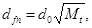
где Mt - безразмерный коэффициент, численно равный сумме абсолютных значений среднемесячных отрицательных температур за зиму в данном районе, принимаемых по СНиП по строительной климатологии и геофизике, а при отсутствии в них данных для конкретного пункта или района строительства - по результатам наблюдений гидрометеорологической станции, находящейся в аналогичных условиях с районом строительства;
d0 - величина, принимаемая равной, м, для:
суглинков и глин - 0,23;
супесей, песков мелких и пылеватых - 0,28;
песков гравелистых, крупных и средней крупности - 0,30;
крупнообломочных грунтов - 0,34.
Значение d0 для грунтов неоднородного сложения определяется как средневзвешенное в пределах глубины промерзания.
2.28. Расчетная глубина сезонного промерзания грунта df, м, определяется по формуле
df = khdfn, (3)
где dfn - нормативная глубина промерзания, определяемая по пп. 2.26 и 2.27;
kh - коэффициент, учитывающий влияние теплового режима сооружения, принимаемый: для наружных фундаментов отапливаемых сооружений - по табл. 1; для наружных и внутренних фундаментов неотапливаемых сооружений - kh = 1,1, кроме районов с отрицательной среднегодовой температурой.
Таблица 1
|
Коэффициент kh при расчетной среднесуточной температуре воздуха в помещении, примыкающем к наружным фундаментам, °С |
|||||
|
0 |
5 |
10 |
15 |
20 и более |
|
|
Без подвала с полами, устраиваемыми: |
|||||
|
по грунту |
0,9 |
0,8 |
0,7 |
0,6 |
0,5 |
|
на лагах по грунту |
1,0 |
0,9 |
0,8 |
0,7 |
0,6 |
|
по утепленному цокольному перекрытию |
1,0 |
1,0 |
0,9 |
0,8 |
0,7 |
|
С подвалом или техническим подпольем |
0,8 |
0,7 |
0,6 |
0,5 |
0,4 |
|
Примечания: 1 Приведенные в табл. 1 значения коэффициента kh относятся к фундаментам, у которых расстояние от внешней грани стены до края фундамента аf < 0,5 м; если аf > 1,5 м, значения коэффициента kh повышаются на 0,1, но не более чем до значения kh = 1, при промежуточном размере аf значения коэффициента kh определяются по интерполяции. 2. К помещениям, примыкающим к наружным фундаментам, относятся подвалы и технические подполья, а при их отсутствии - помещения первого этажа. 3. При промежуточных значениях температуры воздуха коэффициент kh принимается с округлением до ближайшего меньшего значения, указанного в табл. 1. |
|||||
Примечание. В районах с отрицательной среднегодовой температурой расчетная глубина промерзания грунта для неотапливаемых сооружений должна определяться теплотехническим расчетом в соответствии с требованиями СНиП по проектированию оснований и фундаментов на вечномерзлых грунтах.
Расчетная глубина промерзания должна определяться теплотехническим расчетом и в случае применения постоянной теплозащиты основания, а также если тепловой режим проектируемого сооружения может существенно влиять на температуру грунтов (холодильники, котельные и т.п.).
2.29. Глубина заложения фундаментов отапливаемых сооружений по условиям недопущения морозного пучения грунтов основания должна назначаться:
а) для наружных фундаментов (от уровня планировки) по табл. 2;
б) для внутренних фундаментов - независимо от расчетной глубины промерзания грунтов.
Таблица 2
|
Глубина заложения фундаментов в зависимости от глубины расположения уровня подземных вод dw, м, при |
||
|
dw £ df + 2 |
dw > df + 2 |
|
|
Скальные, крупнообломочные с песчаным заполнителем, пески гравелистые, крупные и средней крупности |
Не зависит от df |
He зависит от df |
|
Пески мелкие и пылеватые |
Не менее df |
To же |
|
Супеси с показателем текучести IL < 0 |
То же |
» |
|
То же, при IL ³ 0 |
» |
He менее df |
|
Суглинки, глины, а также крупнообломочные грунты с пылевато-глинистым заполнителем при показателе текучести грунта или заполнителя IL ³ 0,25 |
» |
To же |
|
То же, при IL < 0,25 |
» |
He менее 0,5df |
|
Примечания. 1. В случаях, когда глубина заложения фундаментов не зависит от расчетной глубины промерзания df, соответствующие грунты, указанные в настоящей таблице, должны залегать до глубины не менее нормативной глубины промерзания dfn. 2. Положение уровня подземных вод должно приниматься с учетом указаний пп. 2.17 - 2.21. |
||
Глубину заложения наружных фундаментов допускается назначать независимо от расчетной глубины промерзания, если:
фундаменты опираются на пески мелкие и специальными исследованиями на данной площадке установлено, что они не имеют пучинистых свойств, а также в случаях, когда специальными исследованиями и расчетами установлено, что деформации грунтов основания при их промерзании и оттаивании не нарушают эксплуатационную пригодность сооружения;
предусмотрены специальные теплотехнические мероприятия, исключающие промерзание грунтов.
2.30. Глубину заложения наружных и внутренних фундаментов отапливаемых сооружений с холодными подвалами и техническими подпольями (имеющими отрицательную температуру в зимний период) следует принимать по табл. 2, считая от пола подвала или технического подполья.
2.31. Глубина заложения наружных и внутренних фундаментов неотапливаемых сооружений должна назначаться по табл. 2, при этом глубина исчисляется: при отсутствии подвала или технического подполья - от уровня планировки, а при наличии - от пола подвала или технического подполья.
2.32. В проекте оснований и фундаментов должны предусматриваться мероприятия, не допускающие увлажнения грунтов основания, а также промораживания их в период строительства.
2.33. Фундаменты сооружения или его отсека должны закладываться на одном уровне. При необходимости заложения соседних фундаментов на разных отметках их допустимая разность определяется исходя из условия
Dh £ a(tgj1 + с1/р), (4)
где а - расстояние между фундаментами в свету;
j1 и c1 - расчетные значения соответственно угла внутреннего трения и удельного сцепления грунта (пп. 2.12 - 2.14);
р - среднее давление под подошвой вышерасположенного фундамента от расчетных нагрузок (для расчета основания по несущей способности).
РАСЧЕТ ОСНОВАНИЙ ПО ДЕФОРМАЦИЯМ
2.34. Целью расчета оснований по деформациям является ограничение абсолютных или относительных перемещений фундаментов и надфундаментных конструкций такими пределами, при которых гарантируется нормальная эксплуатация сооружения и не снижается его долговечность (вследствие появления недопустимых осадок, подъемов, кренов, изменений проектных уровней и положений конструкций, расстройств их соединений и т.п.). При этом имеется в виду, что прочность и трещиностойкость фундаментов и надфундаментных конструкций проверены расчетом, учитывающим усилия, которые возникают при взаимодействии сооружения с основанием.
Примечание. При проектировании сооружений, расположенных в непосредственной близости от существующих, необходимо учитывать дополнительные деформации оснований существующих сооружений от нагрузок проектируемых сооружений.
2.35*. Деформации основания подразделяются на:
осадки - деформации, происходящие в результате уплотнения грунта под воздействием внешних нагрузок и в отдельных случаях собственного веса грунта, не сопровождающиеся коренным изменением его структуры;
просадки - деформации, происходящие в результате уплотнения и, как правило, коренного изменения структуры грунта под воздействием как внешних нагрузок и собственного веса грунта, так и дополнительных факторов, таких, как, например, замачивание просадочного грунта, оттаивание ледовых прослоек в замерзшем грунте и т.п.;
подъемы и осадки - деформации, связанные с изменением объема некоторых грунтов при изменении их влажности или воздействии химических веществ (набухание и усадка) и при замерзании воды и оттаивании льда в порах грунта (морозное пучение и оттаивание грунта);
оседания - деформации земной поверхности, вызываемые разработкой полезных ископаемых, изменением гидрогеологических условий, понижением уровня подземных вод, карстово-суффозионными процессами и т.п.;
горизонтальные перемещения - деформации, связанные с действием горизонтальных нагрузок на основание (фундаменты распорных систем, подпорные стены и т.д.) или со значительными вертикальными перемещениями поверхности при оседаниях, просадках грунтов от собственного веса и т.п.;
провалы - деформации земной поверхности с нарушением сплошности грунтов, образующиеся вследствие обрушения толщи грунтов над карстовыми полостями или горными выработками.
2.36. Деформации основания в зависимости от причин возникновения подразделяются на два вида:
первый - деформации от внешней нагрузки на основание (осадки, просадки, горизонтальные перемещения);
второй - деформации, не связанные с внешней нагрузкой на основание и проявляющиеся в виде вертикальных и горизонтальных перемещений поверхности основания (оседания, просадки грунтов от собственного веса, подъемы и т.п.).
2.37. Расчет оснований по деформациям должен производиться из условия совместной работы сооружения и основания.
Деформации основания допускается определять без учета совместной работы сооружения и основания в случаях, оговоренных в п. 2.5.
2.38. Совместная деформация основания и сооружения может характеризоваться:
абсолютной осадкой основания s отдельного фундамента;
средней осадкой основания сооружения  ;
;
относительной неравномерностью осадок двух фундаментов Ds/L;
креном фундамента (сооружения) i;
относительным прогибом или выгибом f/L;
кривизной изгибаемого участка сооружения p;
относительным углом закручивания сооружения v;
горизонтальным перемещением фундамента (сооружения) и.
Примечание. Аналогичные характеристики деформаций могут устанавливаться также для других деформаций, указанных в п. 2.35.
2.39. Расчет оснований по деформациям производится исходя из условия
s £ su, (5)
где s - совместная деформация основания и сооружения, определяемая расчетом в соответствии с указаниями обязательного приложения 2;
su - предельное значение совместной деформации основания и сооружения, устанавливаемое в соответствии с указаниями пп. 2.51 - 2.55.
Примечания 1. В необходимых случаях для оценки напряженно-деформированного состояния конструкций сооружений с учетом длительных процессов и прогноза времени консолидации основания следует производить расчет осадок во времени.
2. Осадки основания, происходящие в процессе строительства (например, осадки от веса насыпей до устройства фундаментов, осадки до омоноличивания стыков строительных конструкций), допускается не учитывать, если они не влияют на эксплуатационную пригодность сооружений.
3. При расчете оснований по деформациям необходимо учитывать возможность изменения как расчетных, так и предельных значений деформаций основания за счет применения мероприятий, указанных в пп. 2.67 - 2.71.
2.40. Расчетная схема основания, используемая для определения совместной деформации основания и сооружения, должна выбираться в соответствии с указаниями п. 2.4.
Расчет деформаций основания следует, как правило, выполнять, применяя расчетную схему основания в виде:
линейно деформируемого полупространства с условным ограничением глубины сжимаемой толщи Нс (п. 6 обязательного приложения 2);
линейно деформируемого слоя, если:
а) в пределах сжимаемой толщи основания Нс, определенной как для линейно деформируемого полупространства, залегает слой грунта с модулем деформации Е1 ³ 100 МПа (1000 кгс/см2) и толщиной h1, удовлетворяющей условию
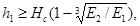
где Е2 - модуль деформации грунта, подстилающего слой грунта с модулем деформации Е1;
б) ширина (диаметр) фундамента b ³ 10 м и модуль деформации грунтов основания Е ³ 10 МПа (100 кгс/см2).
Толщина линейно деформируемого слоя Н в случае «а» принимается до кровли малосжимаемого грунта, в случае «б» вычисляется в соответствии с указаниями п. 8 обязательного приложения 2.
Примечание. Схему линейно деформируемого слоя допускается применять для фундаментов шириной b ³ 10 м при наличии в пределах сжимаемой толщи слоев грунта с модулем деформации Е < 10 МПа (100 кгс/см2), если их суммарная толщина не превышает 0,2 Н.
2.41. При расчете деформаций основания с использованием расчетных схем, указанных в п. 2.40, среднее давление под подошвой фундамента р не должно превышать расчетного сопротивления грунта основания R, кПа (тс/м2), определяемого по формуле
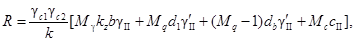
где gс1 и gc2 - коэффициенты условий работы, принимаемые по табл. 3;
k - коэффициент, принимаемый равным: k = 1, если прочностные характеристики грунта (j и с) определены непосредственными испытаниями, и k = 1,1, если они приняты по табл. 1 - 3 рекомендуемого приложения 1;
Мg, Мq, Мс - коэффициенты, принимаемые по табл. 4;
kz - коэффициент, принимаемый равным:
при b < 10 м - kz = 1,
при b ³ 10 м - kz = z0/b + 0,2 (здесь z0 = 8 м);
b - ширина подошвы фундамента, м;
gII - осредненное расчетное значение удельного веса грунтов, залегающих ниже подошвы фундамента (при наличии подземных вод определяется с учетом взвешивающего действия воды), кН/м3 (тс/м3);
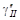
сII - расчетное значение удельного сцепления грунта, залегающего непосредственно под подошвой фундамента, кПа (тс/м2);
dI - глубина заложения фундаментов бесподвальных сооружений от уровня планировки или приведенная глубина заложения наружных и внутренних фундаментов от пола подвала, определяемая по формуле
где hs - толщина слоя грунта выше подошвы фундамента со стороны подвала, м;
hcf - толщина конструкции пола подвала, м;
gcf - расчетное значение удельного веса конструкции пола подвала, кН/м3 (тс/м3);
db - глубина подвала - расстояние от уровня планировки до пола подвала, м (для сооружений с подвалом шириной В £ 20 м и глубиной свыше 2 м принимается db = 2 м, при ширине подвала В > 20 м - db = 0).
Примечания: 1. Формулу (7) допускается применять при любой форме фундаментов в
плане. Если подошва фундамента имеет форму круга или правильного многоугольника
площадью А, принимается 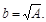
2. Расчетные значения удельного веса грунтов и материала пола подвала, входящие в формулу (7), допускается принимать равными их нормативным значениям.
3. Расчетное сопротивление грунта при соответствующем обосновании может быть увеличено, если конструкция фундамента улучшает условия его совместной работы с основанием.
4 Для фундаментных плит с угловыми вырезами расчетное сопротивление грунта основания допускается увеличивать на 15 %.
5. Если dI > d (d - глубина заложения фундамента от уровня планировки) в формуле (7) принимается dI = d и db = 0.
2.42. Предварительные размеры фундаментов назначаются по конструктивным соображениям или исходя из табличных значений расчетного сопротивления грунтов основания R0 в соответствии с рекомендуемым приложением 3. Значениями R0 допускается также пользоваться для окончательного назначения размеров фундаментов зданий и сооружений III класса, если основание сложено горизонтальными (уклон не более 0,1), выдержанными по толщине слоями грунта, сжимаемость которых не увеличивается в пределах глубины, равной двойной ширине наибольшего фундамента, считая от его подошвы.
Таблица 3
|
Коэффициент gс1 |
Коэффициент gс2 для сооружений с жесткой конструктивной схемой при отношении длины сооружения или его отсека к высоте L/H, равном |
||
|
4 и более |
1,5 и менее |
||
|
Крупнообломочные с песчаным заполнителем и песчаные, кроме мелких и пылеватых |
1,4 |
1,2 |
1,4 |
|
Пески мелкие |
1,3 |
1,1 |
1,3 |
|
Пески пылеватые: |
|||
|
маловлажные и влажные |
1,25 |
1,0 |
1,2 |
|
насыщенные водой |
1,1 |
1,0 |
1,2 |
|
Пылевато-глинистые, а также крупнообломочные с пылевато-глинистым заполнителем с показателем текучести грунта или заполнителя IL £ 0,25 |
1,25 |
1,0 |
1,1 |
|
То же, при |
|||
|
0,25 < IL £ 0,5 |
1,2 |
1,0 |
1,1 |
|
То же, при IL > 0,5 |
1,0 |
1,0 |
1,0 |
|
Примечания 1 К сооружениям с жесткой конструктивной схемой относятся сооружения, конструкции которых специально приспособлены к восприятию усилий от деформаций оснований, в том числе за счет мероприятий, указанных в п. 2.70, б. 2 Для зданий с гибкой конструктивной схемой значение коэффициента gс2 принимается равным единице. 3 При промежуточных значениях L/H коэффициент gс2 определяется по интерполяции |
|||
Таблица 4
|
Угол внутреннего трения jII, град. |
Коэффициенты |
Угол внутреннего трения jII, град. |
Коэффициенты |
||||
|
Мg |
Mq |
Мс |
Мg |
Mq |
Мс |
||
|
0 |
0 |
1,00 |
3,14 |
10 |
0,18 |
1,73 |
4,17 |
|
1 |
0,01 |
1,06 |
3,23 |
11 |
0,21 |
1,83 |
4,29 |
|
2 |
0,03 |
1,12 |
3,32 |
12 |
0,23 |
1,94 |
4,42 |
|
3 |
0,04 |
1,18 |
3,41 |
13 |
0,26 |
2,05 |
4,55 |
|
4 |
0,06 |
1,25 |
3,51 |
14 |
0,29 |
2,17 |
4,69 |
|
5 |
0,08 |
1,32 |
3,61 |
15 |
0,32 |
2,30 |
4,84 |
|
6 |
0,10 |
1,39 |
3,71 |
16 |
0,36 |
2,43 |
4,99 |
|
7 |
0,12 |
1,47 |
3,82 |
17 |
0,39 |
2,57 |
5,15 |
|
8 |
0,14 |
1,55 |
3,93 |
18 |
0,43 |
2,73 |
5,31 |
|
9 |
0,16 |
1,64 |
4,05 |
19 |
0,47 |
2,89 |
5,48 |
|
20 |
0,51 |
3,06 |
5,66 |
33 |
1,44 |
6,76 |
8,88 |
|
21 |
0,56 |
3,24 |
5,84 |
34 |
1,55 |
7,22 |
9,22 |
|
22 |
0,61 |
3,44 |
6,04 |
35 |
1,68 |
7,71 |
9,58 |
|
23 |
0,69 |
3,65 |
6,24 |
36 |
1,81 |
8,24 |
9,97 |
|
24 |
0,72 |
3,87 |
6,45 |
37 |
1,95 |
8,81 |
10,37 |
|
25 |
0,78 |
4,11 |
6,67 |
38 |
2,11 |
9,44 |
10,80 |
|
26 |
0,84 |
4,37 |
6,90 |
39 |
2,28 |
10,11 |
11,25 |
|
27 |
0,91 |
4,64 |
7,14 |
40 |
2,46 |
10,85 |
11,73 |
|
28 |
0,98 |
4,93 |
7,40 |
41 |
2,66 |
11,64 |
12,24 |
|
29 |
1,06 |
5,25 |
7,67 |
42 |
2,88 |
12,51 |
12,79 |
|
30 |
1,15 |
5,59 |
7,95 |
43 |
3,12 |
13,46 |
13,37 |
|
31 |
1,24 |
5,95 |
8,24 |
44 |
3,38 |
14,50 |
13,98 |
|
32 |
1,34 |
6,34 |
8,55 |
45 |
3,66 |
15,64 |
14,64 |
2.43. Расчетное сопротивление R основания, сложенного крупнообломочными грунтами, вычисляется по формуле (7) на основе результатов непосредственных определений прочностных характеристик грунтов.
Если содержание заполнителя превышает 40 %, значение R для крупнообломочных грунтов допускается определять по характеристикам заполнителя.
2.44. Расчетное сопротивление грунтов основания R в случае их уплотнения или устройства грунтовых подушек должно определяться исходя из задаваемых проектом расчетных значений физико-механических характеристик уплотненных грунтов.
2.45. Расчетное сопротивление грунтов основания R при прерывистых фундаментах определяется как для ленточных фундаментов по указаниям пп. 2.41 - 2.44 с повышением значения R коэффициентом kd, принимаемым по табл. 5.
Таблица 5
|
Значение коэффициента kd для песков (кроме рыхлых) и пылевато-глинистых грунтов соответственно при коэффициенте пористости е и показателе текучести IL |
|||
|
е £ 0,5, IL £ 0 |
е = 0,6; IL = 0,25 |
е ³ 0,7; IL ³ 0,5 |
|
|
Прямоугольные |
1,3 |
1,15 |
1,0 |
|
С угловыми вырезками |
1,3 |
1,15 |
1,15 |
|
Примечания. 1 При промежуточных значениях е и IL коэффициент kd принимается по интерполяции 2 Для плит с угловыми вырезами коэффициент kd учитывает повышение R в соответствии с прим. 4 к п. 2.41. |
|||
2.46. При увеличении нагрузок на основание существующих сооружений (например, при реконструкции) расчетное сопротивление грунтов основания должно приниматься в соответствии с данными об их физико-механических свойствах с учетом типа и состояния фундаментов и надфундаментных конструкций сооружения, продолжительностью его эксплуатации, ожидаемых дополнительных осадок при увеличении нагрузок на фундаменты и их влияния на примыкающие сооружения.
2.47. Расчетное сопротивление грунта основания R, вычисленное по формуле (7), может быть повышено в 1,2 раза, если расчетные деформации основания (при давлении, равном R) не превосходят 40 % предельных значений (пп. 2.51 - 2.55). При этом повышенное давление не должно вызывать деформации основания свыше 50 % предельных и превышать значение давления из условия расчета оснований по несущей способности в соответствии с требованиями пп. 2.57 - 2.65.
2.48. При наличии в пределах сжимаемой толщи основания на глубине z от подошвы фундамента слоя грунта меньшей прочности, чем прочность грунта вышележащих слоев, размеры фундамента должны назначаться такими, чтобы обеспечивалось условие
szp + szg £ Rz, (9)
где szp и szg - вертикальные напряжения в грунте на глубине z от подошвы фундамента соответственно дополнительное от нагрузки на фундамент и от собственного веса грунта, кПа (тс/м2);
Rz - расчетное сопротивление грунта пониженной прочности на глубине z, кПа (тс/м2), вычисленное по формуле (7) для условного фундамента шириной bz, м, равной:
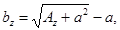
где
Az = N/szp; a = (l - b)/2,
здесь N - вертикальная нагрузка на основание от фундамента;
l и b - соответственно длина и ширина фундамента.
2.49. Давление на грунт у края подошвы внецентренно нагруженного фундамента (вычисленное в предположении линейного распределения давления под подошвой фундамента при нагрузках, принимаемых для расчета оснований по деформациям), как правило, должно определяться с учетом заглубления фундамента в грунт и жесткости надфундаментных конструкций. Краевое давление при действии изгибающего момента вдоль каждой оси фундамента не должно превышать 1,2R и в угловой точке - 1,5R (здесь R - расчетное сопротивление грунта основания, определяемое в соответствии с требованиями пп. 2.41 - 2.48).
Примечание. При расчете оснований фундаментов мостов на внецентренную нагрузку следует руководствоваться требованиями СНиП по проектированию мостов и труб.
2.50. Крен отдельных фундаментов или сооружений в целом должен вычисляться с учетом момента в уровне подошвы фундамента, влияния соседних фундаментов, нагрузок на прилегающие площади и неравномерности сжимаемости основания.
При определении кренов фундаментов, кроме того, как правило, необходимо учитывать заглубление фундамента, жесткость надфундаментной конструкции, а также возможность увеличения эксцентриситета нагрузки из-за наклона фундамента (сооружения).
2.51. Предельные значения совместной деформации основания и сооружения устанавливаются исходя из необходимости соблюдения:
а) технологических или архитектурных требований к деформации сооружения (изменение проектных уровней и положений сооружения в целом, отдельных его элементов и оборудования, включая требования к нормальной работе лифтов, кранового оборудования, подъемных устройств элеваторов и т.п.) - su,s;
б) требований к прочности, устойчивости и трещиностойкости конструкций, включая общую устойчивость сооружения - su,f.
2.52. Предельные значения совместной деформации основания и сооружения по технологическим или архитектурным требованиям su,s должны устанавливаться соответствующими нормами проектирования зданий и сооружений, правилами технической эксплуатации оборудования или заданием на проектирование с учетом в необходимых случаях рихтовки оборудования в процессе эксплуатации.
Проверка соблюдения условия s £ su,s производится при разработке типовых и индивидуальных проектов в составе расчетов сооружения во взаимодействии с основанием после соответствующих расчетов конструкций сооружения по прочности, устойчивости и трещиностойкости.
2.53. Предельные значения совместной деформации основания и сооружения по условиям прочности, устойчивости и трещиностойкости конструкций su,f должны устанавливаться при проектировании на основе расчета сооружения во взаимодействии с основанием.
Значение su,f допускается не устанавливать для сооружений значительной жесткости и прочности (например, зданий башенного типа, домен), а также для сооружений, в конструкциях которых не возникают усилия от неравномерных осадок основания (например, различного рода шарнирных систем).
2.54. При разработке типовых проектов сооружений на основе значений su,s и su,f следует, как правило, устанавливать следующие критерии допустимости применения этих проектов, упрощающие расчет оснований по деформациям при их привязке к местным грунтовым условиям:
а) предельные
значения степени изменчивости сжимаемости грунтов основания aЕ, соответствующие
различным значениям среднего модуля деформации грунтов в пределах плана
сооружения 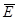 ;
;
б) предельную неравномерность деформаций основания 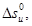
в) перечень грунтов с указанием их простейших характеристик свойств, а также характера напластований, при наличии которых не требуется выполнять расчет оснований по деформациям.
Примечания: 1 Степень изменчивости сжимаемости основания aЕ определяется отношением наибольшего значения приведенного по глубине модуля деформации грунтов основания в пределах плана сооружения к наименьшему значению.
2 Среднее значение модуля деформации грунтов основания 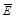
2.55. Предельные значения деформаций оснований допускается принимать согласно рекомендуемому приложению 4, если конструкции сооружения не рассчитаны на усилия, возникающие в них при взаимодействии с основанием, и в задании на проектирование не установлены значения su,s (пп. 2.51, 2.52).
2.56. Расчет деформаций основания допускается не выполнять, если среднее давление под фундаментами проектируемого сооружения не превышает расчетного сопротивления грунтов основания (пп. 2.41 - 2.48) и выполняется одно из следующих условий:
а) степень изменчивости сжимаемости основания меньше предельной по п. 2.54, а;
б) инженерно-геологические условия площадки строительства соответствуют области применения типового проекта (см. п. 2.54, в);
в) грунтовые условия площадки строительства сооружений, перечисленных в табл. 6, относятся к одному из вариантов, указанных в этой таблице.
Таблица 6
|
Варианты грунтовых условий |
|
|
1. Производственные здания Одноэтажные с несущими конструкциями, малочувствительными к неравномерным осадкам (например, стальной или железобетонный каркас на отдельных фундаментах при шарнирном опирании ферм, ригелей), и с мостовыми кранами грузоподъемностью до 50 т включительно Многоэтажные до 6 этажей включительно с сеткой колонн не более 6´9 м |
1. Крупнообломочные грунты при содержании заполнителя менее 40 % 2. Пески любой крупности, кроме пылеватых, плотные и средней плотности 3. Пески любой крупности, только плотные 4. Пески любой крупности, только средней плотности при коэффициенте пористости е £ 0,65. 5. Супеси при е £ 0,65, суглинки при е £ 0,85 и глины при е £ 0,95 если диапазон изменения коэффициента пористости этих грунтов на площадке не превышает 0,2. 6. Пески, кроме пылеватых, при e £ 0,7 в сочетании с пылевато-глинистыми грунтами морского происхождения при е < 0,5 и IL < 0,5 независимо от порядка их залегания |
|
2. Жилые и общественные здания Прямоугольной формы в плане без перепадов по высоте с полным каркасом и бескаркасные с несущими стенами из кирпича, крупных блоков или панелей: а) протяженные многосекционные высотой до 9 этажей включительно; б) несблокированные башенного типа высотой до 14 этажей включительно |
|
|
Примечания: 1 Табл. 6 допускается пользоваться для сооружений, в которых площадь отдельных фундаментов под несущие конструкции отличается не более чем в два раза, а также для сооружений иного назначения при аналогичных конструкциях и нагрузках. 2. Табл. 6 не распространяется на производственные здания с нагрузками на полы свыше 20 кПа (2 тс/м2). |
|
РАСЧЕТ ОСНОВАНИЙ ПО НЕСУЩЕЙ СПОСОБНОСТИ
2.57. Целью расчета оснований по несущей способности являются обеспечение прочности и устойчивости оснований, а также недопущение сдвига фундамента по подошве и его опрокидывания. Принимаемая в расчете схема разрушения основания (при достижении им предельного состояния) должна быть как статически, так и кинематически возможна для данного воздействия и конструкции фундамента или сооружения.
2.58. Расчет оснований по несущей способности производится исходя из условия
F £ gcFu/gn, (11)
где F - расчетная нагрузка на основание, определяемая по указаниям пп. 2.5 - 2.8;
Fu - сила предельного сопротивления основания;
gc - коэффициент условий работы, принимаемый:
для песков, кроме пылеватых.......... gс = 1,0
для песков пылеватых, а также пылевато-глинистых грунтов в
стабилизированном состоянии....... gс = 0,9
для пылевато-глинистых грунтов в нестабилизированном
состоянии........................................... gc = 0,85
для скальных грунтов:
невыветрелых и слабо-
выветрелых........................................ gс = 1,0
выветрелых........................................ gс = 0,9
сильновыветрелых............................ gс = 0,8
gn - коэффициент надежности по назначению сооружения, принимаемый равным 1,2; 1,15 и 1,10 соответственно для зданий и сооружений I, II и III классов.
2.59. Вертикальная составляющая силы предельного сопротивления основания, сложенного скальными грунтами Nu, кН(тс), независимо от глубины заложения фундамента вычисляется по формуле
Nu = Rcb¢l¢, (12)
где Rc - расчетное значение предела прочности на одноосное сжатие скального грунта, кПа (тс/м2);
b¢ и l¢ - соответственно приведенные ширина и длина фундамента, м, вычисляемые по формулам:
b¢ = b - 2eb; l¢ = l - 2еl, (13)
здесь еb и el - соответственно эксцентриситеты приложения равнодействующей нагрузок в направлении поперечной и продольной осей фундамента, м.
2.60. Сила предельного сопротивления основания, сложенного нескальными грунтами в стабилизированном состоянии, должна определяться исходя из условия, что соотношение между нормальными s и касательными напряжениями t по всем поверхностям скольжения, соответствующее предельному состоянию основания, подчиняется зависимости
t = stgjI + cI, (14)
где jI и cI - соответственно расчетные значения утла внутреннего трения и удельного сцепления грунта (пп. 2.12 - 2.14).
2.61. Сила предельного сопротивления основания, сложенного медленно уплотняющимися водонасыщенными пылевато-глинистыми и биогенными грунтами (при степени влажности Sr ³ 0,85 и коэффициенте консолидации cv £ 107 см2/год), должна определяться с учетом возможного нестабилизированного состояния грунтов основания за счет избыточного давления в поровой воде и. При этом соотношение между нормальными s и касательными напряжениями t принимается по зависимости
t = (s - u)tgjI + сI, (15)
где jI и cI - соответствуют стабилизированному состоянию грунтов основания.
Избыточное давление в поровой воде допускается определять методами фильтрационной консолидации грунтов с учетом скорости приложения нагрузки на основание. При соответствующем обосновании (высокие темпы возведения сооружения или нагружения его эксплуатационными нагрузками, отсутствие в основании дренирующих слоев грунта или дренирующих устройств) допускается в запас надежности принимать избыточное давление в поровой воде равным нормальному напряжению по площадкам скольжения (и = s) или принимать значения jI и cI соответствующими нестабилизированному состоянию грунтов основания.
2.62. Вертикальную составляющую силы предельного сопротивления Nu основания, сложенного нескальными грунтами в стабилизированном состоянии, допускается определять по формуле (16), если фундамент имеет плоскую подошву и грунты основания ниже подошвы однородны до глубины не менее ее ширины, а в случае различной вертикальной пригрузки с разных сторон фундамента интенсивность большей из них не превышает 0,5R (R - расчетное сопротивление грунта основания, определяемое в соответствии с пп. 2.41 - 2.48):
Nu = b¢l¢(Ngxgb¢gI + Nqxqg¢Id + NcxccI), (16)
где b¢ и l¢ - обозначения те же, что в формуле (12), причем символом b обозначена сторона фундамента, в направлении которой предполагается потеря устойчивости основания;
Ng, Nq, Nc - безразмерные коэффициенты несущей способности, определяемые по табл. 7 в зависимости от расчетного значения угла внутреннего трения грунта jI и угла наклона к вертикали d равнодействующей внешней нагрузки на основание F в уровне подошвы фундамента;
Таблица 7
|
Угол внутреннего трения грунта jI, град |
Обозначение коэффициентов |
Коэффициенты несущей способности Ng, Nq и Nc при углах наклона к вертикали равнодействующей внешней нагрузки d, град., равных |
|||||||||
|
0 |
5 |
10 |
15 |
20 |
25 |
30 |
35 |
40 |
45 |
||
|
Ng |
0 |
||||||||||
|
0 |
Nq |
1,00 |
- |
- |
- |
- |
- |
- |
- |
- |
- |
|
Nc |
5,14 |
||||||||||
|
Ng |
0,20 |
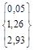 |
|||||||||
|
5 |
Nq |
1,57 |
d¢ = 4,9 |
- |
- |
- |
- |
- |
- |
- |
|
|
Nc |
6,49 |
||||||||||
|
Ng |
0,60 |
0,42 |
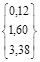 |
||||||||
|
10 |
Nq |
2,47 |
2,16 |
d¢ = 9,8 |
- |
- |
- |
- |
- |
- |
|
|
Nc |
8,34 |
6,57 |
|||||||||
|
Ng |
1,35 |
1,02 |
0,61 |
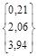 |
|||||||
|
15 |
Nq |
3,94 |
3,45 |
2,84 |
d¢ = 14,5 |
- |
- |
- |
- |
- |
|
|
Nc |
10,98 |
9,13 |
6,88 |
||||||||
|
Ng |
2,88 |
2,18 |
1,47 |
0,82 |
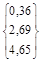 |
||||||
|
20 |
Nq |
6,40 |
5,56 |
4,64 |
3,64 |
d¢ = 18,9 |
- |
- |
- |
- |
|
|
Nc |
14,84 |
12,53 |
10,02 |
7,26 |
|||||||
|
Ng |
5,87 |
4,50 |
3,18 |
2,00 |
1,05 |
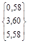 |
|||||
|
25 |
Nq |
10,66 |
9,17 |
7,65 |
6,13 |
4,58 |
d¢ = 22,9 |
- |
- |
- |
|
|
Nc |
20,72 |
17,53 |
14,26 |
10,99 |
7,68 |
||||||
|
Ng |
12,39 |
9,43 |
6,72 |
4,44 |
2,63 |
1,29 |
|
||||
|
30 |
Nq |
18,40 |
15,63 |
12,94 |
10,37 |
7,96 |
5,67 |
d¢ = 26,5 |
- |
- |
|
|
Nc |
30,14 |
25,34 |
20,68 |
16,23 |
12,05 |
8,09 |
|||||
|
Ng |
27,50 |
20,58 |
14,63 |
9,79 |
6,08 |
3,38 |
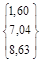 |
||||
|
35 |
Nq |
33,30 |
27,86 |
22,77 |
18,12 |
13,94 |
10,24 |
d¢ = 29,8 |
- |
- |
|
|
Nc |
46,12 |
38,36 |
31,09 |
24,45 |
18,48 |
13,19 |
|||||
|
Ng |
66,01 |
48,30 |
33,84 |
22,56 |
14,18 |
8,26 |
4,30 |
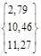 |
|||
|
40 |
Nq |
64,19 |
52,71 |
42,37 |
33,26 |
25,39 |
18,70 |
13,11 |
d¢ = 32,7 |
- |
|
|
Nc |
75,31 |
61,63 |
49,31 |
38,45 |
29,07 |
21,10 |
14,43 |
||||
|
Ng |
177,61 |
126,09 |
86,20 |
56,50 |
32,26 |
20,73 |
11,26 |
5,45 |
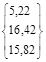 |
||
|
45 |
Nq |
134,87 |
108,24 |
85,16 |
65,58 |
49,26 |
35,93 |
25,24 |
16,82 |
d¢ = 35,2 |
|
|
Nc |
133,87 |
107,23 |
84,16 |
64,58 |
48,26 |
34,93 |
24,24 |
15,82 |
|||
|
Примечания 1. При промежуточных значениях jI и d коэффициенты Ng, Nq и Nc допускается определять по интерполяции. 2. В фигурных скобках приведены значения коэффициентов несущей способности, соответствующие предельному значению угла наклона нагрузки d¢, исходя из условия (19) |
|||||||||||
g1 и g¢I - расчетные значения удельного веса грунтов, кН/м3 (тс/м3), находящихся в пределах возможной призмы выпирания соответственно ниже и выше подошвы фундамента (при наличии подземных вод определяются с учетом взвешивающего действия воды);
cI - расчетное значение удельного сцепления грунта, кПа (тс/м2);
d - глубина заложения фундамента, м (в случае неодинаковой вертикальной пригрузки с разных сторон фундамента принимается значение d, соответствующее наименьшей пригрузке, например, со стороны подвала);
xg, xq, xс - коэффициенты формы фундамента, определяемые по формулам:
xg = 1 - 0,25/h; xq = 1 + 1,5/h;
xc = 1 + 0,3/h, (17)
здесь
h = l/b;
l и b - соответственно длина и ширина подошвы фундамента, принимаемые в случае внецентренного приложения равнодействующей нагрузки равными приведенным значениям l¢ и b¢, определяемым по формулам (13).
Если h = l/b < 1, в формулах (17) следует принимать h = 1.
Угол наклона к вертикали d равнодействующей внешней нагрузки на основание определяется из условия
tgd = Fh/Fv, (18)
где Fh и Fv - соответственно горизонтальная и вертикальная составляющие внешней нагрузки на основание F в уровне подошвы фундамента.
Расчет по формуле (16) допускается выполнять, если соблюдается условие
tgd < sinjI. (19)
Примечания: 1. При использовании формулы (16) в случае неодинаковой пригрузки с разных сторон фундамента в составе горизонтальных нагрузок следует учитывать активное давление грунта.
2. Если условие (19) не выполняется, следует производить расчет фундамента на сдвиг по подошве (п. 2.63).
2.63. Расчет фундамента на сдвиг по подошве производится исходя из условия
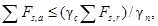
где åFs,a и åFs,r - суммы проекций на плоскость скольжения соответственно расчетных сдвигающих и удерживающих сил, определяемых с учетом активного и пассивного давлений грунта на боковые грани фундамента;
gс и gп - обозначения те же, что в формуле (11).
2.64. Расчет оснований по несущей способности допускается выполнять графоаналитическими методами (круглоцилиндрических или ломаных поверхностей скольжения), если:
а) основание неоднородно по глубине;
б) пригрузка основания с разных сторон фундамента неодинакова, причем интенсивность большей из них превышает 0,5R (R - расчетное сопротивление грунта основания, определяемое в соответствии с пп. 2.41 - 2.48);
в) сооружение расположено на откосе или вблизи откоса;
г) возможно возникновение нестабилизированного состояния грунтов основания, за исключением случаев, указанных в п. 2.65.
2.65. Предельное сопротивление основания (однородного ниже подошвы фундамента до глубины не менее 0,75b), сложенного медленно уплотняющимися водонасыщенными грунтами (п. 2.61), допускается определять следующим образом.
Вертикальную составляющую силы предельного сопротивления основания ленточного фундамента пи, кН/м (тс/м), - по формуле
nu = b¢[q + (1 + p - a + cosa)cI], (21)
где b¢ - обозначение то же, что в формуле (12), м;
q - пригрузка с той стороны фундамента, в направлении которой действует горизонтальная составляющая нагрузки, кПа (тс/м2);
сI - обозначение то же, что в формуле (14), кПа (тс/м2);
p = 3,14;
a - угол, рад, определяемый по формуле
a = arcsin(fh/b¢cI), (22)
здесь fh - горизонтальная составляющая расчетной нагрузки на 1 м длины фундамента, определяемая с учетом активного давления грунта, кН/м (тс/м).
Формулу (21) допускается использовать, если выполняется условие
fh £ b¢cI. (23)
Силу предельного сопротивления основания прямоугольного фундамента (l £ 3b) при действии на него вертикальной нагрузки допускается определять по формуле (16), полагая jI = 0 и xс = 1 + 0,11h.
Во всех случаях, если на фундамент действуют горизонтальные нагрузки и основание сложено грунтами в нестабилизированном состоянии, следует производить расчет фундамента на сдвиг по подошве (п. 2.63).
2.66. Устойчивость фундаментов на действие сил морозного пучения грунтов необходимо проверять, если основание сложено пучинистыми грунтами.
МЕРОПРИЯТИЯ ПО УМЕНЬШЕНИЮ ДЕФОРМАЦИЙ ОСНОВАНИЙ И ВЛИЯНИЯ ИХ НА СООРУЖЕНИЯ
2.67. Для выполнения требований расчета оснований по предельным состояниям, кроме возможности и целесообразности изменения размеров фундаментов в плане или глубины их заложения (включая прорезку грунтов с неудовлетворительными свойствами), введения дополнительных связей, ограничивающих перемещения фундаментов, применения других типов фундаментов, изменения нагрузок на основание и т.д., следует рассмотреть необходимость применения:
а) мероприятий по предохранению грунтов основания от ухудшения их свойств (п. 2.68);
б) мероприятий, направленных на преобразование строительных свойств грунтов (п. 2.69);
в) конструктивных мероприятий, уменьшающих чувствительность сооружений к деформациям основания (п. 2.70).
При проектировании следует также учитывать возможность регулирования усилий в конструкциях сооружения, возникающих при его взаимодействии с основанием (п. 2.71).
Выбор одного или комплекса мероприятий должен производиться с учетом требований пп. 1.1 и 2.1.
2.68. К мероприятиям, предохраняющим грунты основания от ухудшения их строительных свойств, относятся:
а) водозащитные мероприятия на площадках, сложенных грунтами, чувствительными к изменению влажности (соответствующая компоновка генеральных планов, вертикальная планировка территории, обеспечивающая сток поверхностных вод, устройство дренажей, противофильтрационных завес и экранов, прокладка водоводов в специальных каналах или размещение их на безопасных расстояниях от сооружений, контроль за возможными утечками воды и т.п.);
б) защита грунтов основания от химически активных жидкостей, способных привести к просадкам, набуханию, активизации карстово-суффозионных явлений, повышению агрессивности подземных вод и т.п.;
в) ограничение источников внешних воздействий (например, вибраций);
г) предохранительные мероприятия, осуществляемые в процессе строительства сооружений (сохранение природной структуры и влажности грунтов, соблюдение технологии устройства оснований, фундаментов, подземных и надземных конструкций, не допускающей изменения принятой в проекте схемы и скорости передачи нагрузки на основание, в особенности при наличии в основании медленно консолидирующихся грунтов и т.п.).
2.69. Преобразование строительных свойств грунтов основания (устройство искусственных оснований) достигается:
а) уплотнением грунтов (трамбованием тяжелыми трамбовками, устройством грунтовых свай, вытрамбовыванием котлованов под фундаменты, предварительным замачиванием грунтов, использованием энергии взрыва, глубинным гидровиброуплотнением, вибрационными машинами, катками и т.п.);
б) полной или частичной заменой в основании (в плане и по глубине) грунтов с неудовлетворительными свойствами подушками из песка, гравия, щебня и т.п.;
в) устройством насыпей (отсыпкой или гидронамывом);
г) закреплением грунтов (химическим, электрохимическим, буросмесительным, термическим и другими способами);
д) введением в грунт специальных добавок (например, засолением грунта или пропиткой его нефтепродуктами для ликвидации пучинистых свойств);
е) армированием грунта (введением специальных пленок, сеток и т.п.).
2.70. Конструктивные мероприятия, уменьшающие чувствительность сооружений к деформациям основания, включают:
а) рациональную компоновку сооружения в плане и по высоте;
б) повышение прочности и пространственной жесткости сооружений, достигаемое усилением конструкций, в особенности конструкций фундаментно-подвальной части, в соответствии с результатами расчета сооружения во взаимодействии с основанием (введение дополнительных связей в каркасных конструкциях, устройство железобетонных или армокаменных поясов, разрезка сооружений на отсеки и т.п.);
в) увеличение податливости сооружений (если это позволяют технологические требования) за счет применения гибких или разрезных конструкций;
г) устройство приспособлений для выравнивания конструкций сооружения и рихтовки технологического оборудования.
Примечание. Габариты приближения к строительным конструкциям подвижного технологического оборудования (мостовых кранов, лифтов и т.п.) должны обеспечивать их нормальную эксплуатацию с учетом возможных деформаций основания
2.71. К мероприятиям, позволяющим уменьшить усилия в конструкциях сооружения при взаимодействии его с основанием, относятся:
размещение сооружения на площади застройки с учетом ее инженерно-геологического строения и возможных источников вредных влияний (линз слабых грунтов, старых горных выработок, карстовых полостей, внешних водоводов и т.п.);
применение соответствующих конструкций фундаментов (например, фундаментов с малой боковой поверхностью на подрабатываемых территориях и при наличии в основании пучинистых грунтов);
засыпка пазух и устройство подушек под фундаментами из материалов, обладающих малым сцеплением и трением, применение специальных антифрикционных покрытий, отрывка временных компенсационных траншей для уменьшения усилий от горизонтальных деформаций оснований (например, в районах горных выработок);
регулирование сроков замоноличивания стыков сборных и сборно-монолитных конструкций;
обоснованная скорость и последовательность возведения отдельных частей сооружения.
3. ОСОБЕННОСТИ ПРОЕКТИРОВАНИЯ ОСНОВАНИЙ СООРУЖЕНИЙ, ВОЗВОДИМЫХ НА ПРОСАДОЧНЫХ ГРУНТАХ
3.1. Основания, сложенные просадочными грунтами, должны проектироваться с учетом их особенности, заключающейся в том, что при повышении влажности выше определенного уровня они дают дополнительные деформации - просадки от внешней нагрузки и (или) собственного веса грунта.
3.2. При проектировании оснований, сложенных просадочными грунтами, следует учитывать возможность повышения их влажности за счет:
а) замачивания грунтов - сверху из внешних источников и (или) снизу при подъеме уровня подземных вод;
б) постепенного накопления влаги в грунте вследствие инфильтрации поверхностных вод и экранирования поверхности.
Расчетным состоянием просадочных грунтов по влажности является:
при возможности их замачивания - полное водонасыщение (Sr ³ 0,8);
при невозможности их замачивания - установившееся значение влажности weq, принимаемое равным природной влажности w, если w ³ wp, и влажности на границе раскатывания, если w < wp.
3.3. Просадочные грунты характеризуются:
относительной просадочностью esl - относительным сжатием грунтов при заданном давлении после их замачивания;
начальным просадочным давлением psl - минимальным давлением, при котором проявляются просадочные свойства грунтов при их полном водонасыщении;
начальной просадочной влажностью wsl - минимальной влажностью, при которой проявляются просадочные свойства грунтов.
Значения esl и psl определяются в соответствии с требованиями обязательного приложения 2.
3.4. При проектировании оснований, сложенных просадочными грунтами, должны учитываться:
а) просадки от внешней нагрузки ssl,p, происходящие в пределах верхней зоны просадки от подошвы фундамента до глубины, где суммарные вертикальные напряжения от внешней нагрузки и собственного веса грунта равны начальному просадочному давлению или сумма указанных напряжений минимальна;
б) просадки от собственного веса грунта ssl,g, происходящие в нижней зоне просадки, начиная с глубины, где суммарные вертикальные напряжения превышают начальное просадочное давление psl или сумма вертикальных напряжений от собственного веса грунта и внешней нагрузки минимальна, и до нижней границы просадочной толщи;
в) неравномерность просадки грунтов Dssl;
г) горизонтальные перемещения основания usl в пределах криволинейной части просадочной воронки при просадке грунтов от собственного веса.
Примечание. Просадки грунтов учитываются при относительной просадочности esl ³ 0,01 и определяются в соответствии с указаниями обязательного приложения 2.
3.5. При определении просадок грунтов и их неравномерности следует учитывать: инженерно-геологическое строение площадки; физико-механические характеристики грунтов основания и их неоднородность; размеры, глубину заложения и взаимное расположение фундаментов; нагрузки на фундаменты и прилегающие площади; конструктивные особенности сооружения, в частности наличие тоннелей, подвалов под частью сооружения и т.п.; характер планировки территории (наличие выемок и срезки или насыпей и подсыпок, которые оказывают влияние на напряженное состояние грунтов основания, а также на вид и размер просадок); возможные виды, размеры и места расположения источников замачивания грунтов (п. 3.2, а); дополнительные нагрузки на глубокие фундаменты, уплотненные и закрепленные массивы от сил негативного трения, возникающих при просадках грунтов от собственного веса.
Кроме того, необходимо учитывать, что при замачивании сверху больших площадей (ширина замачиваемой площади Bw равна или превышает размер просадочной толщи Hsl) и замачивании снизу за счет подъема уровня подземных вод полностью проявляется просадка от собственного веса ssl,g, а при замачивании сверху малых площадей (Bw < Hsl) проявляется лишь только часть ее s¢sl,g (см. п. 17 обязательного приложения 2).
Примечание. При определении неравномерности просадок грунтов следует учитывать возможные наиболее неблагоприятные виды и места расположения источников замачивания по отношению к рассчитываемому фундаменту или сооружению в целом.
3.6. Грунтовые условия площадок, сложенных просадочными грунтами, в зависимости от возможности проявления просадки грунтов от собственного веса, подразделяются на два типа:
I тип - грунтовые условия, в которых возможна в основном просадка грунтов от внешней нагрузки, а просадка грунтов от собственного веса отсутствует или не превышает 5 см;
II тип - грунтовые условия, в которых помимо просадки грунтов от внешней нагрузки возможна их просадка от собственного веса и размер ее превышает 5 см.
3.7. Расчет оснований, сложенных просадочными грунтами, производится в соответствии с требованиями разд. 2.
При этом деформации основания определяются суммированием осадок и просадок. Осадки основания определяются без учета просадочных свойств грунтов исходя из деформационных характеристик грунтов при установившейся влажности, а просадки - в соответствии с требованиям пп. 3.2 - 3.5.
3.8. При проектировании оснований, сложенных просадочными грунтами, в случае их возможного замачивания (п. 3.2, а) должны предусматриваться мероприятия, исключающие или снижающие до допустимых пределов просадки оснований и (или) уменьшающие их влияние на эксплуатационную пригодность сооружений в соответствии с указаниями пп. 3.12 и 3.13.
В случае невозможности замачивания основания в течение всего срока эксплуатации сооружения (с учетом его возможной реконструкции) просадочные свойства грунтов допускается не учитывать, однако в расчетах должны использоваться физико-механические характеристики грунтов, соответствующие установившейся влажности (п. 3.2).
3.9. Расчетное сопротивление грунта основания при возможном замачивании просадочных грунтов (п. 3.2, а) принимается равным:
а) начальному просадочному давлению psl при устранении возможности просадки грунтов от внешней нагрузки путем снижения давления под подошвой фундамента;
б) значению, вычисленному по формуле (7) с использованием расчетных значений прочностных характеристик (jII и сII) в водонасыщенном состоянии.
При невозможности замачивания просадочных грунтов расчетное сопротивление грунта основания R определяется по формуле (7) с использованием прочностных характеристик этих грунтов при установившейся влажности (п. 3.2).
3.10. Предварительные размеры фундаментов сооружений, возводимых на просадочных грунтах, назначаются исходя из расчетных сопротивлений основания R0, принимаемых по табл. 4 рекомендуемого приложения 3.
Указанными значениями R0 допускается пользоваться также для назначения окончательных размеров фундаментов зданий и сооружений III класса, в которых отсутствует мокрый технологический процесс.
3.11. Требования расчета оснований по деформациям в грунтовых условиях I типа считаются удовлетворенными, если в пределах всей просадочной толщи сумма вертикальных напряжений от внешней нагрузки и от собственного веса грунта не превышает начального просадочного давления psl.
3.12*. При возможности замачивания грунтов основания (п. 3.2) следует предусматривать одно из мероприятий:
а) устранение просадочных свойств грунтов в пределах всей просадочной толщи (пп. 2.69 и 3.13);
б) прорезку просадочной толщи глубокими фундаментами, в том числе свайными и массивами из закрепленного грунта (пп. 2.67 и 3.14);
в) комплекс мероприятий, включающий частичное устранение просадочных свойств грунтов, водозащитные и конструктивные мероприятия (пп. 2.67 - 2.71).
В грунтовых условиях II типа наряду с устранением просадочных свойств грунтов или прорезкой просадочной толщи глубокими фундаментами должны предусматриваться водозащитные мероприятия, а также соответствующая компоновка генплана.
Выбор мероприятий должен производиться с учетом типа грунтовых условий, вида возможного замачивания, расчетной просадки, взаимосвязи проектируемых сооружений с соседними объектами и коммуникациями в соответствии с требованиями п. 1.1.
Примечания. 1. Устранение просадочных свойств грунтов (подпункт «а») в грунтовых условиях I типа допускается выполнять только в пределах части верхней зоны просадки, но не менее 2/3 ее высоты, если конструкции сооружения рассчитаны на возможные деформации основания, а просадки и их неравномерность не превышают 50 % предельных деформаций основания для данного сооружения.
2*. Значения предельных деформаций оснований, приведенные в рекомендуемом приложении 4, не распространяются на сооружения, запроектированные с применением комплекса мероприятий по п. 3.12, в Предельный крен жилых и общественных зданий при применении комплекса мероприятий допускается принимать равным:
iи = 0,008 - для зданий, не оборудованных лифтами, а также если проектом предусмотрены специальные мероприятия по рихтовке направляющих лифтовых шахт;
iu = 0,005 - если указанные мероприятия не предусмотрены.
3.13. Устранение просадочных свойств грунтов достигается:
а) в пределах верхней зоны просадки или ее части уплотнением тяжелыми трамбовками, устройством грунтовых подушек, вытрамбовыванием котлованов, в том числе с устройством уширения из жесткого материала, химическим или термическим закреплением;
б) в пределах всей просадочной толщи - глубинным уплотнением грунтовыми сваями, предварительным замачиванием грунтов основания, в том числе с глубинными взрывами, химическим или термическим закреплением.
3.14. При проектировании глубоких фундаментов следует учитывать:
в грунтовых условиях I типа - сопротивление грунта по боковой поверхности фундаментов;
в грунтовых условиях II типа - негативное трение грунта по боковой поверхности фундаментов, возникающее при просадке грунтов от собственного веса.
4. ОСОБЕННОСТИ ПРОЕКТИРОВАНИЯ ОСНОВАНИЙ СООРУЖЕНИЙ, ВОЗВОДИМЫХ НА НАБУХАЮЩИХ ГРУНТАХ
4.1. Основания, сложенные набухающими грунтами, должны проектироваться с учетом способности таких грунтов при повышении влажности увеличиваться в объеме - набухать.
При последующем понижении влажности у набухающих грунтов происходит обратный процесс - усадка.
Необходимо учитывать, что способностью набухать при увеличении влажности обладают некоторые виды шлаков (например, шлаки электроплавильных производств), а также обычные пылевато-глинистые грунты (ненабухающие при увеличении влажности), если они замачиваются химическими отходами производств (например, растворами серной кислоты).
4.2. Набухающие грунты характеризуются давлением набухания psw, влажностью набухания wsw, относительным набуханием при заданном давлении esw и относительной усадкой при высыхании esh.
Указанные характеристики определяются в соответствии с требованиями обязательного приложения 2.
4.3. При проектировании оснований, сложенных набухающими грунтами, следует учитывать возможность:
набухания этих грунтов за счет подъема уровня подземных вод или инфильтрации - увлажнения грунтов производственными или поверхностными водами;
набухания за счет накопления влаги под сооружениями в ограниченной по глубине зоне вследствие нарушения природных условий испарения при застройке и асфальтировании территории (экранирование поверхности);
набухания и усадки грунта в верхней части зоны аэрации - за счет изменения водно-теплового режима (сезонных климатических факторов);
усадки за счет высыхания от воздействия тепловых источников.
Примечание. При проектировании заглубленных частей сооружений должны учитываться горизонтальные давления, возникающие при набухании и усадке грунтов.
4.4. Основания, сложенные набухающими грунтами, должны рассчитываться в соответствии с требованиями разд. 2.
Деформации основания в результате набухания или усадки грунта должны определяться путем суммирования деформаций отдельных слоев основания согласно указаниям обязательного приложения 2.
При определении деформаций основания осадка его от внешней нагрузки и возможная осадка от уменьшения влажности набухающего грунта должны суммироваться. Подъем основания в результате набухания грунта определяется в предположении, что осадки основания от внешней нагрузки стабилизировались.
Предельные значения деформаций, вызываемых набуханием (усадкой) грунтов, допускается принимать в соответствии с указаниями рекомендуемого приложения 4 с учетом требований п. 2.55.
4.5. Нормативные значения относительного набухания esw и относительной усадки esh определяются по результатам лабораторных испытаний с учетом указанных в п. 4.3 причин набухания или усадки.
Расчетные значения характеристик esw и esh допускается принимать равными нормативным, полагая в формуле (1) коэффициент надежности по грунту vg = 1.
4.6. При расчетных деформациях основания, сложенного набухающими грунтами, больше предельных или недостаточной несущей способности основания должны предусматриваться следующие мероприятия в соответствии с указаниями пп. 2.67 - 2.71:
водозащитные мероприятия;
предварительное замачивание основания в пределах всей или части толщи набухающих грунтов;
применение компенсирующих песчаных подушек;
полная или частичная замена слоя набухающего грунта ненабухающим;
полная или частичная прорезка фундаментами слоя набухающего грунта.
5. ОСОБЕННОСТИ ПРОЕКТИРОВАНИЯ ОСНОВАНИЙ СООРУЖЕНИЙ, ВОЗВОДИМЫХ НА ВОДОНАСЫЩЕННЫХ БИОГЕННЫХ ГРУНТАХ И ИЛАХ
5.1. Основания, сложенные водонасыщенными биогенными грунтами (заторфованными, торфами и сапропелями) и илами или включающие эти грунты, должны проектироваться с учетом их большой сжимаемости, медленного развития осадок во времени и возможности в связи с этим возникновения нестабилизированного состояния, существенной изменчивости и анизотропии прочностных, деформационных и фильтрационных характеристик и изменения их в процессе консолидации основания, а также значительной тиксотропии илов.
Следует учитывать также, что подземные воды в биогенных грунтах и илах, как правило, сильно агрессивны к материалам подземных конструкций.
5.2. Деформационные, прочностные и фильтрационные характеристики биогенных грунтов и илов должны определяться при давлении или в диапазоне давлений, соответствующих напряженному состоянию основания проектируемого сооружения.
Характеристики биогенных грунтов и илов должны устанавливаться при испытаниях образцов грунта в вертикальном и горизонтальном направлениях.
5.3. Расчет оснований, сложенных биогенными грунтами и илами, должен производиться в соответствии с требованиями разд. 2 с учетом скорости передачи нагрузки на основание, изменения эффективных напряжений в грунте в процессе консолидации основания, анизотропии свойств грунтов. При этом допускается использовать методы теории линейной консолидации грунтов.
Примечание. Анизотропию свойств биогенных грунтов и илов допускается не учитывать, если значения характеристик для вертикального и горизонтального направлений отличаются не более чем на 40 %.
5.4. Опирание фундаментов непосредственно на поверхность сильнозаторфованных грунтов, торфов, слабоминеральных сапропелей и илов не допускается.
Если непосредственно под подошвой фундамента залегает слой грунта с модулем деформации Е < 5 МПа (50 кгс/см2) толщиной более ширины фундамента, осадка основания должна определяться с учетом полного давления под подошвой фундамента.
5.5. При расчетных деформациях основания, сложенного биогенными грунтами и илами, больше предельных или недостаточной несущей способности основания должны предусматриваться следующие мероприятия в соответствии с указаниями пп. 2.67 - 2.71:
полная или частичная прорезка слоев биогенных грунтов и илов глубокими фундаментами;
полная или частичная замена биогенного грунта или ила песком, гравием, щебнем и т.д.;
уплотнение грунтов временной или постоянной пригрузкой основания сооружения или всей площадки строительства насыпным (намывным) грунтом или другим материалом (с устройством фильтрующего слоя или дрен при необходимости ускорения процесса консолидации основания);
закрепление илов буросмесительным способом.
5.6. Проектирование пригрузки должно производиться с учетом требований п. 5.3. При этом должны быть установлены толщина, размеры в плане пригрузочного слоя и время, необходимые для достижения заданной степени консолидации основания, а также конечная осадка основания под пригрузкой.
6. ОСОБЕННОСТИ ПРОЕКТИРОВАНИЯ ОСНОВАНИЙ СООРУЖЕНИЙ, ВОЗВОДИМЫХ НА ЭЛЮВИАЛЬНЫХ ГРУНТАХ
6.1. Основания, сложенные элювиальными грунтами - продуктами выветривания скальных пород, оставшимися на месте своего образования и сохранившими в той или иной степени структуру и текстуру исходных пород, должны проектироваться с учетом:
их значительной неоднородности по глубине и в плане из-за наличия грунтов с большим различием их прочностных и деформационных характеристик - скальных разной степени выветрелости и различных типов нескальных грунтов;
склонности к снижению прочности элювиальных грунтов (особенно крупнообломочных и сильновыветрелых скальных) во время их пребывания в открытых котлованах;
возможности перехода в плывунное состояние элювиальных супесей и пылеватых песков в случае их водонасыщения в период устройства котлованов и фундаментов;
возможным наличием просадочных свойств у элювиальных пылеватых песков с коэффициентом пористости е > 0,6 и степенью влажности Sr < 0,7.
6.2. Возможность и степень снижения прочности элювиальных грунтов основания во время пребывания их открытыми в котловане должны устанавливаться опытным путем в полевых условиях. Допускается проводить определения в лабораторных условиях на специально отобранных образцах (монолитах) грунта.
Для предварительной оценки возможного снижения прочности элювиальных грунтов допускаются косвенные методы, учитывающие изменение в течение заданного периода времени: плотности скальных грунтов; удельного сопротивления пенетрации пылевато-глинистых грунтов; содержания частиц размером менее 0,1 мм в песчаных и менее 2 мм в крупнообломочных грунтах.
6.3. Расчет оснований, сложенных элювиальными грунтами, должен производиться в соответствии с требованиями разд. 2. Если элювиальные грунты являются просадочными, следует учитывать требования разд. 3.
6.4. При расчетных деформациях основания, сложенного элювиальными грунтами, больше предельных или недостаточной несущей способности основания должны предусматриваться следующие мероприятия в соответствии с указаниями пп. 2.67 - 2.71:
устройство уплотненных грунтовых распределительных подушек из песка, гравия, щебня или крупнообломочных грунтов с обломками исходных горных пород, в частности при неровной поверхности скальных грунтов;
удаление из верхней зоны основания включений скальных грунтов, полную или частичную замену рыхлого заполнения «карманов» и «гнезд» выветривания в скальных грунтах щебнем, гравием или песком с уплотнением.
6.5. В проекте оснований и фундаментов должна предусматриваться защита элювиальных грунтов от разрушения атмосферными воздействиями и водой в период устройства котлованов. Для этой цели следует применять водозащитные мероприятия, не допускать перерывы в устройстве оснований и последующем возведении фундаментов; предусматривать недобор грунта в котловане; применять взрывной способ разработки скальных грунтов лишь при условии мелкошпуровой отпалки.
7. ОСОБЕННОСТИ ПРОЕКТИРОВАНИЯ ОСНОВАНИЙ СООРУЖЕНИЙ, ВОЗВОДИМЫХ НА ЗАСОЛЕННЫХ ГРУНТАХ
7.1. Основания, сложенные засоленными грунтами, должны проектироваться с учетом их особенностей, обусловливающих:
образование при длительной фильтрации воды и выщелачивании солей суффозионной осадки ssf;
изменение в процессе выщелачивания солей физико-механических свойств грунта, сопровождающееся, как правило, снижением его прочностных характеристик;
набухание или просадку грунтов при замачивании;
повышенную агрессивность подземных вод к материалам подземных конструкций за счет растворения солей, содержащихся в грунте.
7.2. Засоленные грунты характеризуются относительным суффозионным сжатием esf, определяемым, как правило, полевыми испытаниями статической нагрузкой с длительным замачиванием, а для детального изучения отдельных участков строительной площадки - дополнительно лабораторными методами (компрессионно-фильтрационными испытаниями).
При наличии результатов изысканий и опыта строительства в аналогичных инженерно-геологических условиях относительное суффозионное сжатие допускается определять только лабораторными методами.
7.3. Нормативное значение esf следует определять в соответствии с требованиями обязательного приложения 2.
Расчетное значение esf допускается принимать равным нормативному значению, полагая в формуле (1) коэффициент надежности по грунту gg = 1.
7.4. Расчет оснований, сложенных засоленными грунтами, должен производиться в соответствии с требованиями разд. 2. Если засоленные грунты являются просадочными или набухающими, следует учитывать соответственно требования разд. 3 и 4.
Деформации основания необходимо определять с учетом осадки от внешней нагрузки, просадки, набухания или усадки и суффозионной осадки.
Суффозионную осадку следует определять в соответствии с указаниями обязательного приложения 2.
При отсутствии возможности длительного замачивания грунтов и выщелачивания солей деформации основания определяются как для незасоленных грунтов исходя из деформационных характеристик грунтов при полном водонасыщении.
7.5. Расчетное сопротивление R основания, сложенного засоленными грунтами, при возможности длительного замачивания грунтов и выщелачивания солей вычисляется по формуле (7) с использованием расчетных значений прочностных характеристик (jII и сII), полученных для грунтов в водонасыщенном состоянии после выщелачивания солей.
При невозможности длительного замачивания грунтов и выщелачивания солей расчетное сопротивление основания следует определять по формуле (7) с использованием прочностных характеристик, полученных для засоленных грунтов в водонасыщенном состоянии.
7.6. При расчетных деформациях основания, сложенного засоленными грунтами, больше предельных или недостаточной несущей способности основания должны предусматриваться водозащитные мероприятия и в случае необходимости следующие мероприятия в соответствии с указаниями пп. 2.67 - 2.71:
конструктивные мероприятия;
частичная или полная срезка засоленных грунтов с устройством подушки из пылевато-глинистых грунтов;
прорезка толщи засоленных грунтов глубокими фундаментами;
закрепление или уплотнение грунтов;
предварительное рассоление грунтов;
комплекс мероприятий, включающий водозащитные и конструктивные мероприятия, а также устройство грунтовой подушки.
8. ОСОБЕННОСТИ ПРОЕКТИРОВАНИЯ ОСНОВАНИЙ СООРУЖЕНИЙ, ВОЗВОДИМЫХ НА НАСЫПНЫХ ГРУНТАХ
8.1. Основания, сложенные насыпными грунтами, должны проектироваться с учетом их значительной неоднородности по составу, неравномерной сжимаемости, возможности самоуплотнения, особенно при вибрационных воздействиях, изменении гидрогеологических условий, замачивании, а также за счет разложения органических включений.
Примечание. В насыпных грунтах, состоящих из шлаков и глин, необходимо учитывать возможность их набухания при замачивании водой или химическими отходами производств.
8.2. Неравномерность сжимаемости насыпных грунтов должна определяться по результатам полевых и лабораторных исследований, выполняемых с учетом состава и сложения насыпных грунтов, способа отсыпки, вида материала, составляющего основную часть насыпи. Модуль деформации насыпных грунтов, как правило, должен определяться на основе штамповых испытаний.
8.3. Основания, сложенные насыпными грунтами, должны рассчитываться в соответствии с требованиями разд. 2. Если насыпные грунты являются просадочными, набухающими или имеют относительное содержание органического вещества Iот > 0,1, следует учитывать соответственно требования разд. 3 - 5.
Полная деформация основания должна определяться суммированием осадок основание от внешней нагрузки и дополнительных осадок от самоуплотнения насыпных грунтов и разложения органических включений, а также осадок (просадок) подстилающих грунтов от веса насыпи и нагрузок от фундамента.
8.4. Расчетное сопротивление основания сложенного насыпными грунтами, определяется в соответствии с требованиями пп. 2.41 - 2.48.
Предварительные размеры фундаментов сооружений, возводимых на слежавшихся насыпных грунтах, допускается назначать исходя из значений расчетных сопротивлений грунтов основания R0 по рекомендуемому приложению 3.
Значениями R0 допускается пользоваться также и для назначения окончательных размеров фундаментов зданий и сооружений III класса.
8.5. При расчетных деформациях основания, сложенного насыпными грунтами, больше предельных или недостаточной несущей способности основания должны предусматриваться следующие мероприятия в соответствии с требованиями пп. 2.67 - 2.71:
поверхностное уплотнение оснований тяжелыми трамбовками, вибрационными машинами, катками;
глубинное уплотнение грунтовыми сваями, гидровиброуплотнение;
устройство грунтовых подушек (песчаных, щебеночных, гравийных и т.п.);
прорезка насыпных грунтов глубокими фундаментами;
конструктивные мероприятия.
9. ОСОБЕННОСТИ ПРОЕКТИРОВАНИЯ ОСНОВАНИЙ СООРУЖЕНИЙ, ВОЗВОДИМЫХ НА ПОДРАБАТЫВАЕМЫХ ТЕРРИТОРИЯХ
9.1. Основания сооружений, возводимых на подрабатываемых территориях, должны проектироваться с учетом неравномерного оседания земной поверхности, сопровождаемого горизонтальными деформациями сдвигающегося грунта в результате производства горных работ и перемещения грунта в выработанное пространство.
Параметры деформаций земной поверхности, в том числе кривизна поверхности, ее наклоны и горизонтальные перемещения, а также вертикальные уступы должны определяться в соответствии с требованиями СНиП по проектированию зданий и сооружений на подрабатываемых территориях. Эти параметры, являющиеся основой для расчета оснований, фундаментов и надфундаментных конструкций сооружений, должны учитываться при назначении расчетных значений характеристик грунта.
9.2. Расчетные значения прочностных и деформационных характеристик грунта для определения усилий, действующих на фундаменты в результате деформаций земной поверхности, следует принимать равными нормативным, полагая в формуле (1) коэффициент надежности по грунту gg = 1.
Значение модуля деформации грунта в горизонтальном направлении Eh допускается принимать равным 0,5 для пылевато-глинистых грунтов и 0,65 - для песчаных грунтов от значения модуля деформации грунта в вертикальном направлении Е.
9.3. Расчетные сопротивления грунтов основания R должны определяться в соответствии с требованиями пп. 2.41 - 2.48. При этом коэффициент условий работы gс2 в формуле (7) для сооружений жесткой конструктивной схемы, имеющих поэтажные и фундаментный пояса с замкнутым контуром, следует принимать по табл. 8; в остальных случаях - gc2 = 1.
9.4. Краевое давление на грунт под подошвой фундаментов, в том числе плитных, должно определяться с учетом дополнительных моментов, вызываемых деформацией земной поверхности при подработке.
Краевое давление не должно превышать 1,4R и в угловой точке - 1,5R, а равнодействующая нагрузок не должна выходить за пределы ядра сечения подошвы фундамента.
9.5. Расчет деформаций оснований допускается не производить в случаях, указанных в табл. 6, а также если конструкции сооружений проектируются с учетом неравномерного оседания земной поверхности.
Таблица 8
|
Коэффициент gс2 для сооружений с жесткой конструктивной схемой при отношении длины сооружения или отсека к его высоте L/H |
||||
|
L/H ³ 4 |
4 > L/H > 2,5 |
2,5 ³ L/H > 1,5 |
L/H £ 1,5 |
|
|
Крупнообломочные с песчаным заполнителем и песчаные, кроме мелких и пылеватых |
1,4 |
1,7 |
2,1 |
2,5 |
|
Пески мелкие |
1,3 |
1,6 |
1,9 |
2,2 |
|
Пески пылеватые |
1,1 |
1,3 |
1,7 |
2,0 |
|
Крупнообломочные с пылевато-глинистым заполнителем и пылевато-глинистые с показателем текучести IL £ 0,5 |
1,0 |
1,0 |
1,1 |
1,2 |
|
То же, с показателем текучести IL > 0,5 |
1,0 |
1,0 |
1,0 |
1,0 |
На площадках, сложенных просадочными грунтами, конструкции сооружений должны проектироваться с учетом возможного совместного воздействия на них деформаций от подработок и просадок грунтов.
9.6. Для сооружений, возводимых на подрабатываемых территориях, должны применяться фундаменты следующих конструктивных схем:
жесткой (плитные, ленточные с железобетонными поясами, столбчатые со связями-распорками между ними и т.п.);
податливой (фундаменты с горизонтальными швами скольжения между отдельными элементами, фундаменты с вертикальными элементами, имеющими возможность наклоняться при горизонтальных перемещениях грунта);
комбинированной (жесткие фундаменты, имеющие шов скольжения ниже уровня планировки или пола подвала).
Конструктивная схема фундамента должна приниматься в зависимости от расчетных деформаций земной поверхности, жесткости надфундаментных конструкций, деформативности грунтов оснований и пр.
Примечание. Для зданий повышенной этажности и башенного типа применение наклоняющихся фундаментов не допускается.
9.7. На площадках, сложенных грунтами с модулем деформации Е < 10 МПа (110 кгс/см2), а также при возможности резкого ухудшения строительных свойств грунтов основания вследствие изменения гидрогеологических условий площадки при подработке рекомендуется применять свайные или плитные фундаменты.
Если в верхней зоне основания залегают слои ограниченной толщины насыпных, биогенных и просадочных грунтов, следует предусматривать прорезку этих слоев фундаментами.
9.8. К основным мероприятиям, снижающим неблагоприятное воздействие деформаций земной поверхности на фундаменты и конструкции сооружений, относятся:
а) уменьшение поверхности фундаментов, имеющей контакт с грунтом;
б) заложение фундаментного пояса на одном уровне в пределах отсека сооружения;
в) устройство грунтовых подушек на основаниях, сложенных практически несжимаемыми грунтами;
г) размещение подвалов и технических подполий под всей площадью отсека сооружения;
д) засыпка грунтом пазух котлованов и выполнение грунтовых подушек из материалов, обладающих малым сцеплением и трением на контакте с поверхностью фундаментов;
е) отрывка перед подработкой временных компенсационных траншей по периметру сооружения.
10. ОСОБЕННОСТИ ПРОЕКТИРОВАНИЯ ОСНОВАНИЙ СООРУЖЕНИЙ, ВОЗВОДИМЫХ В СЕЙСМИЧЕСКИХ РАЙОНАХ
10.1. Основания сооружений, возводимых в районах с сейсмичностью 7, 8 и 9 баллов, должны проектироваться с учетом требований СНиП по проектированию зданий и сооружений в сейсмических районах.
В районах с сейсмичностью менее 7 баллов основания следует проектировать без учета сейсмических воздействий.
10.2. Проектирование оснований с учетом сейсмических воздействий должно выполняться на основе расчета по несущей способности на особое сочетание нагрузок, определяемых в соответствии с требованиями СНиП по нагрузкам и воздействиям, а также по проектированию зданий и сооружений в сейсмических районах.
Предварительные размеры фундаментов допускается определять расчетом основания по деформациям на основное сочетание нагрузок (без учета сейсмических воздействий) согласно требованиям разд. 2.
10.3. Расчет оснований по несущей способности выполняется на действие вертикальной составляющей внецентренной нагрузки, передаваемой фундаментом, исходя из условия
Na £ gc,eqNu,eq/gn, (24)
где Na - вертикальная составляющая расчетной внецентренной нагрузки в особом сочетании;
Nu,eq - вертикальная составляющая силы предельного сопротивления основания при сейсмических воздействиях;
gc,eq - сейсмический коэффициент условий работы, принимаемый равным 1,0; 0,8; 0,6 соответственно для грунтов I, II и III категорий по сейсмическим свойствам, причем для сооружений, возводимых в районах с повторяемостью землетрясений 1, 2 и 3, значение gс,eq следует умножать на 0,85; 1,0 и 1,15 соответственно (категории грунтов по сейсмическим свойствам и повторяемость землетрясений определяются в соответствии со СНиП по проектированию и строительству в сейсмических районах);
gn - коэффициент надежности по назначению сооружения, принимаемый по указаниям п. 2.58.
Горизонтальная составляющая нагрузки учитывается при расчете фундамента на сдвиг по подошве.
10.4. При действии моментных нагрузок в двух направлениях расчет основания по несущей способности должен выполняться раздельно на действие сил и моментов в каждом направлении независимо друг от друга.
10.5. При расчете оснований и фундаментов на особое сочетание нагрузок с учетом сейсмических воздействий допускается частичный отрыв подошвы фундамента от грунта при выполнении следующих условий:
эксцентриситет еа расчетной нагрузки не превышает одной трети ширины фундамента в плоскости момента;
сила предельного сопротивления основания определяется для условного фундамента, размер подошвы которого в направлении действия момента равен размеру сжатой зоны
bc = 1,5(b - 2еа);
максимальное краевое давление под подошвой фундамента, вычисленное с учетом его неполного опирания на грунт, не превышает краевой ординаты эпюры предельного сопротивления основания.
10.6. Глубина заложения фундаментов в грунтах, относимых по их сейсмическим свойствам согласно СНиП по проектированию зданий и сооружений в сейсмических районах к I и II категориям, принимается, как правило, такой же, как и для фундаментов в несейсмических районах.
На площадках, сложенных грунтами III категории по сейсмическим свойствам, рекомендуется предусматривать устройство искусственных оснований (п. 2.69).
10.7. При невозможности заглубления фундаментов здания или отсека на одном уровне в нескальных грунтах должно выполняться условие (4), в котором расчетное значение угла внутреннего трения грунта должно быть уменьшено при сейсмичности: 7 баллов - на 2°, 8 баллов - на 4° и 9 баллов - на 7°.
11. ОСОБЕННОСТИ ПРОЕКТИРОВАНИЯ ОСНОВАНИЙ ОПОР ВОЗДУШНЫХ ЛИНИЙ ЭЛЕКТРОПЕРЕДАЧИ
11.1. Требования настоящего раздела должны соблюдаться при проектировании оснований опор воздушных линий электропередачи и опор открытых распределительных подстанций напряжением от 1 кВ и выше.
Примечание. По характеру нагружения опоры подразделяются на промежуточные, анкерные и угловые Опоры, применяемые в единичных случаях, а также на больших переходах, называются специальными.
11.2. Расчетные характеристики грунтов должны устанавливаться в соответствии с требованиями пп. 2.12 - 2.14.
При расчете оснований по деформациям значение коэффициента надежности по грунту gg допускается принимать равным единице. Для массовых опор нормативные значения характеристик допускается принимать по таблицам рекомендуемого приложения 1, причем значения сп, jn и Е, приведенные для пылевато-глинистых грунтов с показателем текучести 0,5 < IL £ 0,75, допускается принимать для диапазона 0,5 < IL £ 1,0.
При расчете оснований по несущей способности значение коэффициента надежности по грунту следует принимать по табл. 9.
11.3. Расчет оснований по деформациям и несущей способности должен проводиться для всех режимов работы опор. Динамическое действие порывов ветра на конструкцию опоры учитывается лишь при расчете оснований по несущей способности.
Предельные значения осадок и крена отдельных блоков фундаментов при их загружении сжимающими нагрузками следует принимать по рекомендуемому приложению 4.
11.4. Расчет оснований, сложенных пучинистыми грунтами, по несущей способности должен выполняться с учетом одновременного действия сил морозного пучения, постоянных и длительных временных нагрузок. Расчет оснований опор на одновременное действие сил морозного пучения и кратковременных нагрузок (ветровых и от обрыва проводов) не требуется.
Таблица 9
|
Коэффициент надежности по грунту gg для определения расчетных значений |
|||
|
плотности rI |
угла внутреннего трения jI |
удельного сцепления cI |
|
|
Песчаные |
1,0 |
1,1 |
4,0 |
|
Супеси при показателе текучести IL £ 0,25, суглинки и глины при IL £ 0,5 |
1,0 |
1,1 |
2,4 |
|
Супеси при показателе текучести IL > 0,25, суглинки и глины при IL > 0,5 |
1,0 |
1,1 |
3,3 |
11.5. Расчет деформаций оснований выдергиваемых фундаментов и анкерных плит по деформациям может не выполняться, если выдергивающая сила центральна по отношению к подошве фундамента (анкерной плите) и соблюдается условие
Fn - Gncosb £ gcR¢0A0, (25)
где Fn - нормативное значение выдергивающей силы, кН (кгс);
Gn - нормативное значение веса фундамента или плиты, кН (кгс);
b - угол наклона выдергивающей силы к вертикали, град.;
gс - коэффициент условий работы, определяемый в соответствии с указаниями п. 11.6;
R¢0 - расчетное сопротивление грунта обратной засыпки, кПа (кгс/см2), принимаемое по табл. 6 рекомендуемого приложения 3;
A0 - площадь проекции верхней поверхности фундамента на плоскость, перпендикулярную линии действия выдергивающей силы, м2 (см2).
11.6. Коэффициент условий работы gс в формуле (25) принимается равным
gс = g1g2g3g4,
где g1 = 1,2; 1,0 и 0,8 - для опор с базой В (расстояние между осями отдельных фундаментов), равной 5; 2,5 и 1,5 м; при промежуточных значениях В значение g1 определяется по интерполяции;
g2 = 1,0 для нормального и g2 = 1,2 - для аварийного и монтажного режимов работы;
g3 = 1,0; 0,8 и 0,7 - соответственно для опор: промежуточных прямых; промежуточных угловых, анкерных и анкерно-угловых, концевых и порталов распределительных устройств; специальных;
g4 = 1,0 и 1,15 - соответственно для: грибовидных фундаментов и анкерных плит опор с оттяжками, стойки которых защемлены в грунте; анкерных плит опор, стойки которых шарнирно оперты на фундаменты.
11.7. Расчетное сопротивления грунта основания R под подошвой сжато-опрокидываемых фундаментов определяется по формуле (7) при коэффициенте gс2 = 1.
Наибольшее давление на грунт под краем подошвы фундамента при действии вертикальной сжимающей и горизонтальных нагрузок в одном или в двух направлениях не должно превышать 1,2R.
11.8. Расчет оснований по несущей способности при действии на фундамент (анкерную плиту) выдергивающей нагрузки производится исходя из условия
F - gfGncosb £ gcFu,a/gn, (26)
где F - расчетное значение выдергивающей силы, кН (кгс);
gf - коэффициент надежности по нагрузке, принимаемый равным 0,9;
Gn - нормативное значение веса фундамента (плиты), кН (кгс);
b - угол наклона выдергивающей силы к вертикали, град.;
gс - коэффициент условий работы, принимаемый равным единице;
Fu,a - сила предельного сопротивления основания выдергиваемого фундамента, кН (кгс), определяемая в соответствии с указаниями п. 11.9;
gп - коэффициент надежности по назначению, принимаемый равным для опор:
промежуточных прямых................................................................... 1,0;
анкерных прямых без разности тяжений........................................ 1,2;
угловых (промежуточных и анкерных).......................................... 1,3;
анкерных (прямых и концевых) с разностью тяжений, порталов открытых распределительных устройств специальных 1,7.
11.9. Силу предельного сопротивления основания выдергиваемого фундамента Fu,a следует определять по формуле
Fu,a = gbf(Vbf - Vf)cosb + c0[A1cos(j0 - b/2) + A2cos(j0 + b/2) + 2A3cosj0], (27)
где gbf - расчетное значение удельного веса грунта обратной засыпки, кН/м3 (кгс/см3);
Vbf - объем, м3 (см3), тела выпирания в форме усеченной пирамиды, образуемой плоскостями, проходящими через кромки верхней поверхности фундамента (плиты) и наклоненными к вертикали под углами v1, равными:
у нижней кромки
v1 = j0 + b/2;
у верхней кромки
v2 = j0 - b/2;
у боковых кромок
v3 = v4 = j0;
Vf - объем части фундамента, находящейся в пределах тела выпирания, м3 (см3); для анкерных плит принимается Vf = 0;
A1, А2 и А3 - площади граней тела выпирания, м2 (см2), имеющих в основании соответственно нижнюю, верхнюю и боковые кромки верхней поверхности фундамента (плиты);
с0 и j0 - расчетные значения удельного сцепления, кПа (кгс/см2), и угла внутреннего трения грунта обратной засыпки, град., принимаемые равными:
с0 = hсI; j0 = hjI; (28)
здесь сI и jI - расчетные значения соответственно удельного сцепления и угла внутреннего трения грунта природного сложения, определяемые в соответствии с указаниями п. 11.2;
h - коэффициент, принимаемый по табл. 10.
Таблица 10
|
Коэффициент h при плотности грунта засыпки, т/м3 |
||
|
1,55 |
1,7 |
|
|
Пески, кроме пылеватых влажных и насыщенных водой |
0,5 |
0,8 |
|
Пылевато-глинистые при показателе текучести IL £ 0,5 |
0,4 |
0,6 |
|
Примечание. Значение коэффициента η для пылеватых песков влажных, глин и суглинков при показателе текучести 0,5 < IL £ 0,75 и супесей при 0,5 < IL £ 1 должно быть понижено на 15 %. |
||
12. ОСОБЕННОСТИ ПРОЕКТИРОВАНИЯ ОСНОВАНИЙ ОПОР МОСТОВ И ТРУБ ПОД НАСЫПЯМИ
12.1. Основания опор мостов и труб под насыпями следует проектировать с учетом особенностей конструкций этих сооружений, действующих на них нагрузок и условий эксплуатации, инженерно-геологических, гидрогеологических и гидрологических условий.
12.2. Основания опор мостов и труб под насыпями должны быть рассчитаны по несущей способности и по деформациям.
Расчет оснований опор мостов и труб под насыпями по несущей способности следует производить согласно указаниям СНиП по проектированию мостов и труб.
Расчет оснований опор мостов по деформациям должен включать определение осадок и кренов фундаментов, а для оснований труб под насыпями - определение осадок фундаментов и производиться в соответствии с требованиями обязательного приложения 2.
Расчет по деформациям оснований опор мостов внешне статически неопределимых систем следует производить с учетом взаимодействия оснований, фундаментов, надфундаментной части опор и пролетных строений.
Расчет осадок фундаментов допускается не производить в случаях, предусмотренных СНиП по проектированию мостов и труб.
12.3. В местах залегания пылевато-глинистых грунтов с IL > 0,6, биогенных грунтов и илов, а также на неустойчивых склонах решение о конструкции трубы и ее фундамента должно приниматься исходя из необходимости обеспечения устойчивости не только трубы, но и примыкающих к ней участков насыпи.
12.4. Доверительная вероятность а расчетных значений характеристик грунтов, определяемых в соответствии с требованиями пп. 2.12 - 2.14, должна приниматься для грунтов оснований опор мостов и труб под насыпями при расчетах оснований по несущей способности a = 0,98, по деформациям a = 0,9.
12.5. Глубина заложения фундаментов опор мостов и фундаментов или грунтовых подушек труб под насыпями должна назначаться в соответствии с требованиями пп. 2.25 - 2.33 с учетом следующих указаний.
Если возможен размыв грунта дна водотока, фундаменты опор мостов должны быть заглублены не менее чем на 2,5 м от наинизшей отметки дна водотока в месте расположения опоры после его общего и местного размыва расчетным паводком и не менее чем на 2,0 м - при размыве наибольшим паводком.
При отсутствии возможности размыва грунта фундаменты опор мостов в нескальных грунтах должны быть заглублены от поверхности грунта или дна водотока не менее чем на 1 м.
В скальные грунты с пределом прочности на одноосное сжатие в водонасыщенном состоянии Rc > 50 МПа (500 кгс/см2) фундаменты следует заглублять не менее чем на 0,1 м, а при Rc £ 50 МПа (500 кгс/см2) - не менее чем на 0,25 м.
Примечание. Глубина размыва дна водотока должна определяться в соответствии с указаниями нормативных документов по проектированию мостов и труб, утвержденных Госстроем СССР или согласованных с ним.
12.6. Глубину заложения фундаментов опор мостов и труб под насыпями следует принимать по табл. 2 при расположении уровня подземных вод на глубине dw £ df + 2 м. Если по требованиям табл. 2 глубина заложения фундаментов должна быть не менее расчетной глубины промерзания грунта, все фундаменты, за исключением фундаментов или грунтовых подушек для средних звеньев одноочковых труб отверстием до 2 м, следует заглублять не менее чем на 0,25 м ниже расчетной глубины промерзания грунта. При этом за расчетную глубину промерзания принимается ее нормативное значение.
Фундаменты или грунтовые подушки средних звеньев одноочковых труб отверстием до 2 м допускается закладывать без учета глубины промерзания грунта.
В случаях когда глубина заложения фундаментов не зависит от расчетной глубины промерзания грунта, соответствующие грунты, указанные в табл. 2, должны залегать не менее чем на 1 м ниже нормативной глубины промерзания грунта.
Примечание. Глубину заложения фундаментов и грунтовых подушек под средние звенья труб диаметром 2 м и более следует назначать с учетом уменьшения глубины промерзания грунта в направлении к оси насыпи.
12.7. Трубы под насыпями следует укладывать на фундаменты или на уплотненные грунтовые подушки. Фундаменты обязательны для звеньев и оголовков труб незамкнутого поперечного сечения и рекомендуются для оголовков труб любой конструкции.
В случаях заложения оголовков труб на грунтовых подушках должны предусматриваться противофильтрационные экраны.
12.8. Основанию труб (в целях сохранения в процессе эксплуатации необходимого уклона для стока воды по трубам и предупреждения их подтопления снизу) должен придаваться строительный подъем в зависимости от высоты насыпи и физико-механических свойств грунтов основания.
13*. ОСОБЕННОСТИ ПРОЕКТИРОВАНИЯ ОСНОВАНИЙ СООРУЖЕНИЙ, ВОЗВОДИМЫХ НА ЗАКАРСТОВАННЫХ ТЕРРИТОРИЯХ
13.1. Основания сооружений, возводимых на закарстованных территориях, должны проектироваться с учетом возможности образования карстовых деформаций - провалов и оседаний (п. 2.35) и особенностей развития карстовых процессов.
13.2. Карстовые деформации характеризуются следующими параметрами:
интенсивностью их проявления, т.е. среднегодовым количеством карстовых деформаций на единицу площади территории;
средними и максимальными диаметрами провалов и оседаний, их средней глубиной, а для оседаний, кроме того, кривизной земной поверхности и наклоном краевых участков зоны оседания.
Параметры карстовых деформаций определяются расчетом с использованием вероятностно-статистических и (или) аналитических методов на основе анализа инженерно-геологических и гидрогеологических условий с учетом их возможных изменений за время эксплуатации сооружений, закономерностей образования деформаций, конструктивных особенностей сооружения, степени его ответственности и срока эксплуатации.
13.3. При проектировании сооружений на закарстованных территориях следует предусматривать мероприятия, исключающие возможность образования карстовых деформаций или снижающие их неблагоприятное воздействие на сооружения, к которым относятся:
заполнение карстовых полостей;
прорезка закарстованных пород глубокими фундаментами;
закрепление закарстованных пород и (или) вышележащих грунтов;
водозащитные мероприятия;
исключение или ограничение неблагоприятных техногенных воздействий.
13.4. Если применением мероприятий, указанных в п. 13.3, возможность образования карстовых деформаций полностью не исключена, а также в случае технической невозможности или нецелесообразности их применения, должны предусматриваться конструктивные мероприятия, назначаемые исходя из расчета фундаментов и конструкций сооружения с учетом образования карстовых деформаций.
13.5. Выбор одного или комплекса мероприятий должен производиться с учетом видов возможных карстовых деформаций и их параметров, степени значимости сооружения, его конструктивных и эксплуатационных особенностей в соответствии с требованиями п. 1.1.
Принятые мероприятия не должны приводить к активизации карстовых процессов на примыкающих территориях.
В обоснованных случаях следует предусматривать контроль за развитием карстовых процессов в зоне сооружения во время его эксплуатации.
13.6. Расчет оснований сооружений, возводимых на закарстованных территориях, должен производиться в соответствии с требованиями разд. 2.
При наличии в основании сооружений грунтов с особыми свойствами (просадочных, набухающих и др.), залегающих над закарстованными грунтами, следует учитывать требования соответствующих разделов настоящих норм.
13.7. При проектировании сооружений на закарстованных территориях с возможностью образования провалов следует применять фундаменты с консольными выступами: неразрезные ленточные, пространственно-рамные, плоские и ребристые плитные.
13.8. При необходимости усиления оснований и фундаментов существующих сооружений следует предусматривать:
объединение отдельных фундаментов в пространственно-рамные конструкции;
устройство консольных выступов, поясов жесткости и т.п.;
закрепление грунтов основания;
заполнение образовавшихся провалов (песком, щебнем, цементным раствором и т.п.).
14*. ОСОБЕННОСТИ ПРОЕКТИРОВАНИЯ ОСНОВАНИЙ СООРУЖЕНИЙ, ВОЗВОДИМЫХ НА ПУЧИНИСТЫХ ГРУНТАХ
14.1. Основания, сложенные пучинистыми грунтами, должны проектироваться с учетом способности таких грунтов при сезонном промерзании увеличиваться в объеме, что сопровождается подъемом поверхности грунта и возникновением сил морозного пучения грунта, действующих на фундамент. При оттаивании происходит осадка пучинистого грунта.
14.2. К пучинистым грунтам относятся пылевато-глинистые грунты, пески пылеватые и мелкие, а также крупнообломочные грунты с пылевато-глинистым заполнителем, имеющие к началу промерзания влажность выше определенного уровня.
При проектировании следует учитывать возможность повышения влажности грунта за счет подъема уровня подземных вод, инфильтрации поверхностных вод и экранирования поверхности.
14.3. Пучинистые грунты характеризуются:
относительной деформацией морозного пучения efh - отношением подъема ненагруженной поверхности грунта к толщине промерзающего слоя;
давлением морозного пучения rfh, нормальным к подошве фундамента;
удельным значением tfh касательной силы морозного пучения, действующей вдоль боковой поверхности фундамента.
Указанные характеристики, как правило, должны устанавливаться на основе опытных данных с учетом возможного изменения гидрогеологических условий. При отсутствии опытных данных характеристики допускается определять по физическим характеристикам грунтов.
14.4. Расчет оснований, сложенных пучинистыми грунтами, должен выполняться в соответствии с требованиями разд. 2 с учетом сил морозного пучения.
14.5. При заложении фундаментов ниже расчетной глубины промерзания должен выполняться расчет устойчивости фундаментов на действие касательных сил морозного пучения.
14.6. При заложении фундаментов выше расчетной глубины промерзания (малозаглубленные фундаменты) необходимо производить расчет деформаций морозного пучения грунтов основания с учетом касательных и нормальных сил морозного пучения.
Примечание. Малозаглубленные фундаменты допускается применять для сооружений III класса, а также для одно- и двухэтажных зданий сельскохозяйственного назначения при нормативной глубине промерзания не более 1,7 м.
14.7. Расчетные деформации морозного пучения грунтов основания, определяемые с учетом нагрузки от сооружений, не должны превышать предельных значений рекомендуемого приложения 4 для набухающих грунтов.
14.8. Если расчетные деформации морозного пучения основания малозаглубленных фундаментов больше предельных или устойчивость фундаментов на действие сил морозного пучения недостаточна, кроме возможности изменения глубины заложения фундаментов, следует рассмотреть необходимость применения мероприятий, уменьшающих силы и деформации морозного пучения, а также глубину промерзания в соответствии с указаниями пп. 2.67 - 2.71 - водозащитные, теплозащитные или физико-химические.
Если при применении указанных мероприятий деформации морозного пучения не исключены, следует предусматривать конструктивные мероприятия, назначаемые исходя из расчета фундаментов и конструкций сооружения с учетом возможных деформаций морозного пучения.
15*. ОСОБЕННОСТИ ПРОЕКТИРОВАНИЯ ОСНОВАНИЙ СООРУЖЕНИЙ, ВОЗВОДИМЫХ НА НАМЫВНЫХ ГРУНТАХ
15.1. Основания, сложенные намывными грунтами, должны проектироваться с учетом их неоднородности (многослойности, изменчивости состава и свойств в плане и по глубине), способности изменять физико-механические свойства со временем, в том числе за счет колебаний уровня подземных вод, чувствительности к вибрационным воздействиям, а также возможных осадок подстилающих слоев.
Для намыва, как правило, следует использовать песчаные грунты.
Примечание. Намыв грунтов на просадочные (в грунтовых условиях I типа), набухающие и засоленные грунты допускается при соответствующем обосновании.
15.2. Прочностные и деформационные характеристики намывных грунтов, как правило, должны устанавливаться по результатам полевых и лабораторных исследований грунтов ненарушенного сложения с учетом возраста намывного грунта, т.е. времени, прошедшего после окончания намыва, а также разницы во времени между периодом инженерно-геологических изысканий и началом строительства.
15.3. Для предварительных расчетов оснований, а также окончательных расчетов оснований зданий и сооружений III класса допускается пользоваться значениями прочностных и деформационных характеристик грунтов, полученными по их физическим характеристикам в зависимости от возраста намывных грунтов.
15.4. Расчет оснований, сложенных намывными грунтами, должен производиться в соответствии с требованиями разд. 2.
Если толща намывных грунтов подстилается биогенными грунтами или илами, в расчетах оснований следует дополнительно учитывать требования разд. 5. В указанном случае применение столбчатых фундаментов не допускается.
15.5. Расчетное сопротивление R намывных грунтов определяется в соответствии с требованиями пп. 2.41 - 2.48. При этом значения прочностных характеристик намывного грунта (jII и сII) следует принимать соответствующими началу строительства.
15.6. Полная деформация основания, сложенного намывными грунтами, должна определяться суммированием осадок основания от внешней нагрузки, самоуплотнения толщи намывных грунтов и дополнительных осадок за счет незавершившейся консолидации загруженных намывом подстилающих слоев грунта.
15.7. При расчетных деформациях основания, сложенного намывными грунтами, больше предельных или недостаточной несущей способности основания в соответствии с указаниями пп. 2.67 - 2.71 должны предусматриваться:
уплотнение намывных грунтов (вибрационными машинами и катками, глубинным гидровиброуплотнением, использованием энергии взрыва, трамбованием, избыточным намывом грунта на площади застройки и др.);
закрепление или армирование намывного грунта;
конструктивные мероприятия.
16*. ПРОЕКТИРОВАНИЕ ЗАКРЕПЛЕНИЯ ГРУНТОВ
16.1. Закрепление грунтов производится в целях повышения их прочности и водонепроницаемости в основании проектируемых или существующих сооружений.
Массивы из закрепленного грунта (закрепленные массивы) могут быть использованы в качестве фундаментов и других заглубленных конструкций.
Примечание. Возможность и способ закрепления грунтов основания существующих сооружений должны устанавливаться с учетом характера деформаций их оснований и состояния их конструкций.
16.2. Для устройства закрепленных массивов в зависимости от их назначения и грунтовых условий применяются следующие способы:
инъекционный, осуществляемый путем нагнетания в грунт химических или цементационных растворов с помощью инъекторов или в скважины (смолизация, силикатизация, цементация);
буросмесительный (путем разработки и перемешивания грунта с цементом или цементными растворами в скважинах);
термический (путем нагнетания в скважины высокотемпературных газов или с помощью электронагрева грунта).
Способ закрепления и рецептура растворов должны обеспечивать расчетные физико-механические характеристики закрепленного грунта и удовлетворять требованиям по охране окружающей среды.
16.3. Инъекционные способы закрепления грунтов следует применять в следующих грунтовых условиях:
силикатизацию и смолизацию - в песчаных грунтах с коэффициентом фильтрации k от 0,5 до 80 м/сут, в просадочных грунтах при k ³ 0,2 м/сут и степени влажности Sr £ 0,7;
цементацию - в трещиноватых скальных грунтах с удельным водопоглощением не менее 0,01 л/мин × м2; в крупнообломочных грунтах при k ³ 40 м/сут, а также для заполнения карстовых полостей и закрепления закарстованных пород.
16.4. Буросмесительный способ следует применять для закрепления независимо от коэффициента фильтрации илов (в том числе со слоями глин и суглинков с показателем текучести IL ³ 0,5 или слоями песков рыхлых и средней плотности), а также лессовых просадочных грунтов с числом пластичности от 0,02 до 0,15 в грунтовых условиях I типа.
Примечание. Применение буросмесительного способа закрепления грунтов допускается для зданий и сооружений III класса.
16.5. Термический способ следует применять для закрепления лессовых просадочных грунтов со степенью влажности Sr £ 0,5.
16.6. Для силикатизации и смолизации используют в качестве крепителей - водные растворы силиката натрия, карбамидные и другие синтетические смолы, в качестве отвердителей - неорганические или органические кислоты и соли, а также газы. Для регулирования процессов гелеобразования или предварительной обработки закрепленного грунта применяют рецептурные добавки.
16.7. Для цементации грунтов следует применять цементационные растворы (цементные, цементно-песчаные, цементно-глинистые, цементно-песчано-глинистые и др.), а также поризованные и вспененные растворы при необходимости с химическими добавками.
При наличии агрессивных подземных вод надлежит применять стойкие по отношению к ним цементы.
16.8. Рецептуры растворов для инъекционных и буросмесительных способов закрепления грунтов и физико-механические характеристики закрепленных грунтов должны уточняться по результатам их закрепления в лабораторных или полевых условиях.
16.9. Форму и размеры закрепленных массивов, а также физико-механические характеристики закрепленных грунтов следует устанавливать исходя из инженерно-геологических и гидрогеологических условий площадки, принятого способа и технологии работ по закреплению грунтов, а также расчета оснований в соответствии с требованиями разд. 2 с учетом взаимодействия закрепленного массива с окружающим грунтом.
При наличии в основании грунтов с особыми свойствами (например, просадочных) следует учитывать дополнительно требования соответствующих разделов настоящих норм.
16.10. Основания, усиленные отдельными закрепленными массивами диаметром от 0,6 до 1,0 м, в том числе илоцементными сваями, должны проектироваться в соответствии с требованиями СНиП 2.02.03-85.
16.11. Расположение инъекторов и скважин и порядок заходок должны обеспечить создание закрепленного массива требуемой формы и размера.
Последовательность создания закрепленного массива должна исключить возможность возникновения неравномерных осадок возводимого или существующих сооружений.
16.12. В проекте следует предусматривать на первоначальном этапе производства работ контрольные работы по оценке соответствия фактических параметров закрепленного грунта проектным.
16.13. Предельное давление нагнетания при закреплении грунтов инъекционными способами должно назначаться из условия исключения возможности разрывов сплошности закрепляемого грунта.
16.14. Количество и тип бурового и инъекционного оборудования должны назначаться при выполнении работ при проектных давлениях, расходах инъецируемых растворов и в заданные сроки.
17*. ПРОЕКТИРОВАНИЕ ИСКУССТВЕННОГО ЗАМОРАЖИВАНИЯ ГРУНТОВ
17.1. Искусственное замораживание грунтов следует предусматривать для устройства временных ледогрунтовых ограждений котлованов при строительстве заглубленных сооружений и фундаментов в водонасыщенных неустойчивых и трещиноватых скальных грунтах.
17.2. Для искусственного замораживания грунтов следует применять холодильные установки с использованием в качестве хладоагента аммиака. В обоснованных случаях допускается использовать фреон и жидкий азот.
Искусственное замораживание грунтов производят холодоносителем (рассолом), циркулирующим в рассолопроводах и замораживающих колонках.
Вид, концентрация и температура холодоносителя должны определяться в зависимости от температуры, засоленности и скорости движения подземных вод. Как правило, в качестве холодоносителя следует использовать водный раствор хлористого кальция.
Нагнетательные линии рассолопроводов должны иметь уклон 1 - 2 % в сторону конденсатора, а всасывающие линии - 0,5 % в сторону испарителей.
17.3. Материалы инженерно-геологических изысканий для проектирования искусственного замораживания грунтов должны содержать следующие данные:
предел прочности грунтов на одноосное сжатие в естественном и замороженном состояниях;
коэффициенты теплопроводности и теплоемкости в естественном и замороженном состояниях;
распределение температуры грунта по глубине;
коэффициент фильтрации грунтов;
направление и скорость движения подземных вод, пьезометрические напоры по каждому водоносному горизонту, характеристику гидравлической связи между горизонтами и с открытыми водоемами;
химический состав подземных вод, а также температуру их замерзания;
глубину залегания и характеристики водоупора.
17.4. Толщину стен и объем ледогрунтового ограждения, а также мощность холодильной установки следует определять статическими и теплотехническими расчетами в зависимости от размеров и очертания котлованов и физико-механических характеристик замороженного грунта.
17.5. Нормативные значения физико-механических характеристик замороженных грунтов, как правило, следует определять путем испытания образцов, отобранных при бурении скважин по методике, установленной ГОСТ 24586-81.
17.6. Расчетное значение предела прочности замороженного грунта на одноосное сжатие следует принимать равным 0,35 от нормативного значения для вертикальных круглых выработок диаметром до 10 м и 0,20 - 0,25 - для выработок больших размеров и сложной конфигурации.
17.7. Среднюю температуру ледогрунтового ограждения следует принимать 30 - 40 % температуры холодоносителя, циркулирующего в замораживающих колонках.
17.8. Скважины для замораживающих колонок должны располагаться по контуру котлована с шагом 1,0 - 1,5 м. Расстояние между рядами скважин при их многорядном расположении следует принимать равным 2 - 3 м.
Расстояние от оси скважины до внутренней грани ледогрунтового ограждения следует принимать равным 0,6 расчетной толщины ледогрунтового ограждения.
17.9. Скважины должны быть заглублены в водоупорный слой грунта не менее чем на 3 м.
При отсутствии водоупорного слоя следует образовывать искусственный водоупорный слой специальными способами (например, цементацией или замораживанием грунта по всей площади котлована).
Толщина водоупорного слоя должна быть определена расчетом на возможный прорыв подземных вод.
17.10. В проекте следует предусмотреть бурение дополнительных (резервных) скважин для замораживающих колонок в количестве:
не более 10 % от их общего числа при глубине замораживания до 100 м;
не более 20 % при глубине замораживания свыше 100 м;
для наклонных скважин - соответственно 20 % и 25 %.
17.11. Для наблюдения за процессом замораживания следует устраивать контрольные скважины - гидрогеологические и термометрические. Количество и места их расположения определяются в зависимости от инженерно-геологических условий.
17.12. Работа замораживающей станции и подача холодоносителя в замораживающие колонки должна быть непрерывной в течение всего периода активного замораживания грунта.
После создания ледогрунтового ограждения работа замораживающей станции должна обеспечить его сохранение до окончания возведения заглубленных сооружений и фундаментов.
17.13. Способ оттаивания ледогрунтового ограждения (естественное или искусственное оттаивание) следует назначать с учетом фактического расположения скважин и состояния ледогрунтового ограждения.
17.14. В проекте должна быть предусмотрена защита существующих сооружений и коммуникаций (теплоизоляция, перекладка коммуникаций и пр.), попадающих в зону влияния ледогрунтового ограждения.
18*. ПРОЕКТИРОВАНИЕ ВОДОПОНИЖЕНИЯ
18.1. Требования настоящего раздела должны соблюдаться при проектировании искусственного понижения уровня подземных вод (водопонижения) для защиты заглубленных и подземных сооружений и котлованов в периоды строительства и (или) эксплуатации с применением водоотлива, дренажа, водопонизительных скважин и иглофильтров.
18.2. При проектировании водопонижения, кроме требований п. 1.1, необходимо учитывать возможное изменение режима подземных вод, условий поверхностного стока в строительный и эксплуатационный периоды, отведенные места сброса подземных вод, химический состав подземных вод и влияние понижения их уровня на окружающую среду и существующие сооружения, сроки и технологию строительных работ.
При водопонижении должны предусматриваться меры, препятствующие ухудшению строительных свойств грунтов в основании сооружения и нарушению устойчивости откосов выработки.
18.3. При проектировании дренажа, водопонизительных скважин и иглофильтров, а также при расчетах водопонижения, определении необходимости опытного (пробного) водопонижения, требуемых наблюдений и устройств для них и мероприятий по охране окружающей среды следует, кроме требований настоящего раздела, учитывать требования СНиП 2.06.14-85.
18.4. Требуемое понижение уровня подземных вод следует определять:
в водоносных слоях, содержащих безнапорные воды, в зависимости от допустимого повышения уровня воды за время аварийного отключения водопонизительной системы;
в напорных водоносных слоях, залегающих ниже дна котлована или пола заглубленного сооружения, из условия исключения возможности прорывов воды и необходимости обеспечения устойчивости грунтов в основании сооружения.
При пересечении сооружением (котлованом) водоупорных слоев следует исходить из практически достижимого понижения уровня подземных вод, предусматривая при необходимости дополнительные мероприятия для защиты сооружения (котлована).
18.5. При проектировании строительного водопонижения следует предусматривать максимально возможное использование устройств водопонизительных систем, предназначенных для эксплуатационного периода.
18.6. Водоотлив из котлованов и траншей следует применять в системах строительного водопонижения.
В проекте должны быть предусмотрены канавки и лотки для сбора поступающих в выработки подземных и поверхностных вод и отвода их к зумпфам (водоприемникам) с последующей их откачкой на поверхность. Канавки и зумпфы, как правило, следует располагать за пределами основания сооружения. При необходимости их расположения в пределах основания они должны быть укреплены и защищены от размыва.
18.7. В насосных станциях для водоотлива следует предусматривать резерв насосов в размере 100 % (по производительности) при одном работающем насосе и 50 % - при двух и более.
18.8. Траншейный дренаж допускается устраивать на свободных от застройки территориях.
18.9. Закрытый беструбчатый дренаж (траншеи, заполненные фильтрующим материалом) следует предусматривать, как правило, для кратковременной эксплуатации (на оползневых склонах в период осуществления мероприятий по их стабилизации, в котловане в период строительства сооружения и т.п.).
18.10. Трубчатый дренаж следует предусматривать в грунтах с коэффициентом фильтрации K ³ 2 м/сут. Допускается его применение и при K < 2 м/сут в строительном водопонижении и в сопутствующих дренажах тоннелей, каналов и других устройств для коммуникаций, если опытным путем доказана его эффективность.
18.11. Устройство дренажей в виде подземных галерей (проходных и полупроходных) допускается:
при возможности выполнить дренаж только подземным способом;
при их использовании для периода эксплуатации сооружения (в особенности в случаях, когда переустройство или ремонт дренажа невозможны или затруднены);
в инженерно-геологических условиях, где их применение экономически эффективно.
18.12. Для обеспечения фильтрационной способности дренажных галерей следует предусматривать обсыпку как для трубчатых дренажей или специальную отделку (крепь) с применением пористого бетона, с устройством «фильтровых окон» и т.п.
18.13. Вакуумный дренаж следует применять в грунтах с коэффициентом фильтрации менее 2 м/сут.
18.14. Водопонизительные скважины (открытые и герметические, оборудованные насосами, сквозные фильтры, самоизливающиеся и водопоглощающие) следует предусматривать как для водопонижения эксплуатационного периода, так и для строительного водопонижения.
18.15. Иглофильтры следует применять, как правило, в системах строительного водопонижения.
18.16. Электроосушение следует применять в слабопроницаемых грунтах, имеющих коэффициенты фильтрации менее 0,1 м/сут.
18.17. Воды от водопонизительных систем при невозможности их использования следует отводить, как правило, самотеком в существующие водостоки или к отведенным местам сброса.
Максимальные допустимые скорости течения воды в водоотводящих устройствах следует принимать в зависимости от материала их конструкции и продолжительности работы с учетом требований СНиП 2.06.03-85.
18.18. В случае невозможности отвода воды самотеком необходимо предусматривать специальные насосные станции с резервуарами, при проектировании которых следует руководствоваться требованиями СНиП 2.04.03-85, а при использовании откачиваемой воды для водоснабжения - СНиП 2.04.02-84.
ПРИЛОЖЕНИЕ
1
Рекомендуемое
НОРМАТИВНЫЕ
ЗНАЧЕНИЯ
ПРОЧНОСТНЫХ И ДЕФОРМАЦИОННЫХ ХАРАКТЕРИСТИК ГРУНТОВ
1. Характеристики грунтов, приведенные в табл. 1 - 3, допускается использовать в расчетах оснований сооружений в соответствии с указаниями п. 2.16.
2. Характеристики песчаных грунтов в табл. 1 относятся к кварцевым пескам с зернами различной окатанности, содержащим не более 20 % полевого шпата и не более 5 % в сумме различных примесей (слюда, глауконит и пр.), включая органическое вещество, независимо от степени влажности грунтов Sr.
Таблица 1
Нормативные значения удельного сцепления сn, кПа (кгс/см2), угла внутреннего трения jn, град., и модуля деформации Е, МПа (кгс/см2), песчаных грунтов четвертичных отложений
|
Обозначения характеристик грунтов |
Характеристики грунтов при коэффициенте пористости е, равном |
||||
|
0,45 |
0,55 |
0,65 |
0,75 |
||
|
Гравелистые и крупные |
cn |
2 (0,02) |
1 (0,01) |
- |
- |
|
jn |
43 |
40 |
38 |
- |
|
|
Е |
50 (500) |
40 (400) |
30 (300) |
- |
|
|
Средней крупности |
cn |
3 (0,03) |
2 (0,02) |
1 (0,01) |
- |
|
jn |
40 |
38 |
35 |
- |
|
|
Е |
50 (500) |
40 (400) |
30 (300) |
- |
|
|
Мелкие |
cn |
6 (0,06) |
4 (0,04) |
2 (0,02) |
- |
|
jn |
38 |
36 |
32 |
28 |
|
|
Е |
48 (480) |
38 (380) |
28 (280) |
18 (180) |
|
|
Пылеватые |
cn |
8 (0,08) |
6 (0,06) |
4 (0,04) |
2 (0,02) |
|
jn |
36 |
34 |
30 |
26 |
|
|
Е |
39 (390) |
28 (280) |
18 (180) |
11 (110) |
|
Таблица 2
Нормативные значения удельного сцепления сn, кПа (кгс/см2), угла внутреннего трения jn, град., пылевато-глинистых нелессовых грунтов четвертичных отложений
Таблица 3